Linux6.6.3_User’s Manual_V1.1
Document classification: □ Top secret □ Secret □ Internal information ■ Open
Copyright
The copyright of this manual belongs to Baoding Folinx Embedded Technology Co., Ltd. Without the written permission of our company, no organizations or individuals have the right to copy, distribute, or reproduce any part of this manual in any form, and violators will be held legally responsible.
Forlinx adheres to copyrights of all graphics and texts used in all publications in original or license-free forms.
The drivers and utilities used for the components are subject to the copyrights of the respective manufacturers. The license conditions of the respective manufacturer are to be adhered to. Related license expenses for the operating system and applications should be calculated/declared separately by the related party or its representatives.
Application Scope
This manual is mainly applicable to the Linux6.6.3 operating system on the Forlinx OK-MX9596-C platform. Other platforms can also refer to it, but there will be differences between different platforms. Please make modifications according to the actual conditions.
Revision History
Date |
Manual Version |
SoM Version |
Carrier Board Version |
Revision History |
|---|---|---|---|---|
11/08/2025 |
V1.0 |
V1.1 |
V1.1 |
Initial Version |
28/08/2025 |
V1.1 |
V1.1 |
V1.1 |
Adding 2.6 Screen Switching. |
Overview
This manual is designed to help you quickly familiarize yourselves with the product, and understand the interface functions and testing methods. It primarily covers the testing of interface functions on the development board, the methods for flashing images, and troubleshooting procedures for common issues encountered in use. In the process of testing, some commands are annotated to facilitate the your understanding, mainly for practical use.
There are total four chapters:
Chapter 1. provides an overview of the product, briefly introducing the interface resources of the development board, the relevant driver paths in the kernel source code, supported flashing and booting methods, as well as explanations of key sections in the documentation;
Chapter 2. is the fast boot/startup of the product, which can adopt two ways of serial port login and network login;
Chapter 3. mainly serves as an introduction to the product’s usage features and is divided into multiple sections, including the function testing of the command line in the terminal and the function testing of the QT desktop.
Chapter 4. is the image update, which mainly describes the method of updating the image to the storage device. The user can select the corresponding flashing mode according to the actual situation.
1. OK- MX9596-C Development Board Description
OK-MX9596-C development board features SoM+ carrier board design, built on the NXP i.MX 95 automotive-grade processor. It includes a hexa-core Arm® Cortex®-A55 (1.8GHz), plus Cortex®-M33 (333MHz) and Cortex®-M7 (800MHz) cores.
The NXP i.MX 95 processor supports ARM Mail-G310 GPU, 4KVPU, and NPU (2.0TOP/s). It supports EdgeLock® Secure Enclave, 5 x CAN-FD channels, 1 x 10Gb Ethernet, and 2 x Gigabit Ethernet ports with TSN.
The FET-MX9596-C SoM supports 8GB LPDDR4x memory and 64GB eMMC. OK-OK-MX9596-C-C development board is rich in functional interface resources, providing a variety of peripheral interfaces, such as network card, audio Codec, TF Card, LVDS, MIPI, WIFI, 4G, PCIE, USB2.0, USB3.0 TYPE-C, serial port, can and other functional interfaces.
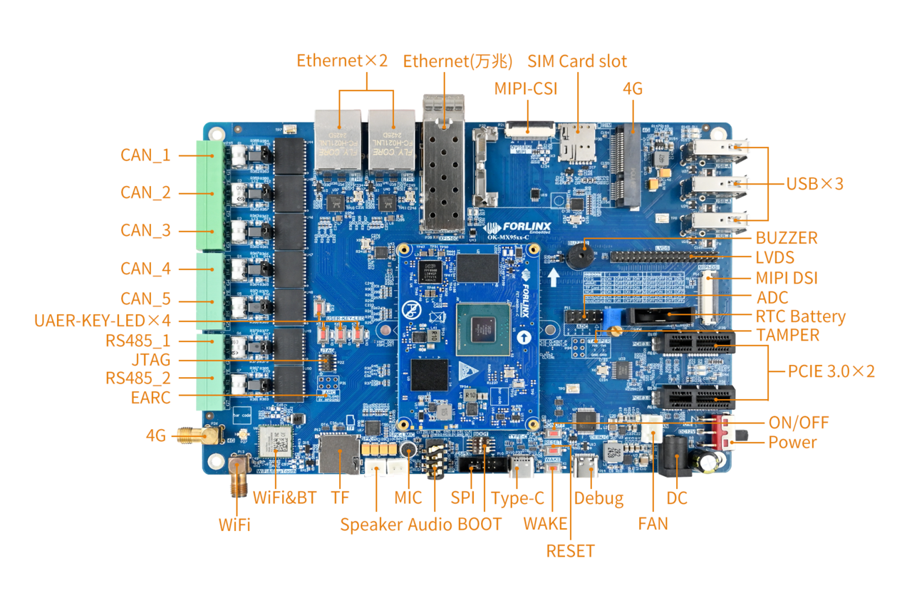
Note:
Hardware parameters are no longer described in this software manual. Before referring to this manual for software development, please read the “User’s Hardware Manual” to understand the product naming rules and the hardware configuration information of the product you are using, which will help you to use this product.
1.1 Introduction to Linux6.6.3 System Software Resources
Device |
Location of driver source code in the kernel |
Device Name |
|---|---|---|
NIC Driver |
drivers/net/ethernet/freescale/enetc |
/sys/class/net/eth* |
LCD Backlight Driver |
drivers/video/backlight/pwm_bl.c |
/sys/class/backlight/ |
KEY Driver |
drivers/input/keyboard/gpio_keys.c |
|
USB |
drivers/usb/dwc3/ |
|
4/5G |
drivers/net/usb/gobinet |
|
TF Driver |
drivers/mmc/host/sdhci-esdhc-imx.c |
/dev/mmcblk1 |
serial port driver |
drivers/tty/serial/fsl_lpuart.c |
/dev/ttyLP* |
watchdog driver |
drivers/watchdog/imx7ulp_wdt.c |
/dev/watchdog |
WIFI |
drivers/net/wireless/nxp/NXP88W8987 |
mlan0 |
Audio Driver |
sound/soc/codecs/nau8822.c |
/dev/snd/ |
lpspi |
drivers/spi/spi-fsl-lpspi.c |
|
Flexspi |
drivers/spi/spi-nxp-fspi.c |
|
I2C driver |
drivers/i2c/busses/i2c-imx-lpi2c.c |
/dev/i2c-* |
PWM Driver |
drivers/pwm/pwm-imx-tpm.c |
/sys/class/pwm/ |
GT928 Touch Driver |
drivers/input/touchscreen/goodix.c |
/dev/input/event* |
ft5x06 Touch Driver |
drivers/input/touchscreen/edt-ft5x06.c |
/dev/input/event* |
RTC Driver |
drivers/rtc/rtc-pcf8563.c |
/dev/rtc0 |
1.2 Flashing and Boot Settings
OK-MX9596-C supports OTG and TF card flashing, as well as booting the bootloader from storage media like eMMC and TF cards. Currently, it only supports booting the bootloader from the M core, not from the A core.
The startup dial-up code is as follows:
BOOT |
1 |
2 |
3 |
4 |
|---|---|---|---|---|
OTG |
OFF |
OFF |
ON |
ON |
eMMC |
OFF |
OFF |
OFF |
OFF |
TF |
OFF |
OFF |
OFF |
ON |
QSPI flash |
OFF |
ON |
ON |
OFF |
Please refer to the “System Flashing” section for specific flashing procedures.
2. Fast Startup
2.1 Preparation Before Startup
The OK-MX9596-C development board has two system login methods, serial and network login.
Hardware preparation before system startup:
12V 5A DC power cable
Debugging serial cable (serial login use)
The development board features a USB Type-C port for debugging purposes, allowing users to connect it to a PC using a Type-A to Type-C cable in order to access the board’s status information.
Network cable (for network login)
According to the development board interface to connect the screen (Based on display needs).
Check the start mode dip switch
Please check the DIP switch on your development board and make sure it is set to the desired boot mode. Please refer to “1.3 Flashing and Boot Configuration” for the startup mode settings.
2.2 Serial Login
2.2.1 Serial Login
Note:
Serial port settings: Baud rate 115200, data bit 8, stop bit 1, no parity bit, no flow control.
Serial terminal login as root user, no password, login without account.
Software: Windows PC requires Super Terminal; choose a familiar serial terminal software.
Here is an example using Putty to explain how to configure the terminal:
Step 1: Connect the development board and the PC using a serial cable, and verify the serial port number recognized by the computer through the “Device Manager”. The port number recognized by the computer should be considered as the accurate one;
Note:
Four serial ports will be generated:
- Ch A: Linux debugging port
- Ch B: M33 core debugging port
- Ch C: M7 core debugging port
- Ch D: Unused
Step 2: Open and configure Putty; set the serial line to match the COM port of your computer with a baud rate of 115200.
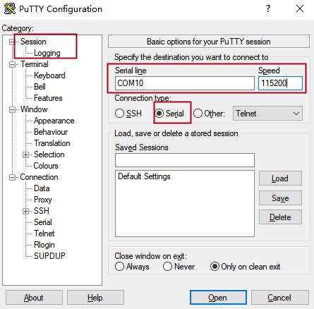

Step 3: Turn on the development board. The serial port will output log messages until “Welcome to forlinx ok-mx95-C ttyLP0” appears, indicating the startup is complete.
Login credentials:
Username: root (no password)
Or: forlinx / forlinx
2.2.2 Serial Login Common Problems
Common problem troubleshooting points for logging in using the serial port are as follows:
Case 1: No information is printed after the serial port is connected:
First, check whether the DIP switch is correct;
Re-open the serial port;
Change a serial port cable to test it;
If none of the above works, check the status of the SoM’s LED. If it is not blinking (heartbeat) or not lit, the system may have failed to start. In this case, check the system boot process or reflash the system.
Case 2: Command cannot be input after serial port is connected:
Re-open the serial port;
Replace the USB serial port cable with a new USB port on the computer, view the corresponding COM port in the device management, and reopen the serial port;
Replace a serial port cable.
Case 3: Device Manager does not recognize the port:
Serial port driver is not installed. Try to install serial port driver.
Forlinx provides a serial driver for WIN10, located at:
User Data \ Software Data \ 3 Tools \ XRUSB _ Serial Chip Driver.zip
Case 4: The port recognized by the device manager is abnormal.
Error message: This device is not working properly because Windows cannot load the drivers required for this device. (Code 31), as shown below:
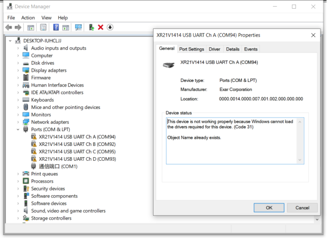
Close all open terminal programs, then unplug and reconnect the serial cable.
2.3 Network Login Method
2.3.1 Network Connection Test
Note:
By default, eth0 has a static IP: 192.168.0.232. eth1 and eth2 (10G optical module ports) obtain IP addresses dynamically via DHCP;
The computer and board should be on the same network segment for testing.
Before logging into the network, ensure that the direct network connection between the computer and the development board is functioning properly. You can test the connection status via pin command. The specific method is as follows:
1. Connect the development board’s eth0 port to the computer using an Ethernet cable. Power on the board and boot the kernel. Confirm the blue heartbeat LED is blinking. Check the network card connection, ensuring its LED flashes rapidly. Once confirmed, proceed with testing the network connection.

2. Close the computer firewall (General computer operations, not described here in detail), then open the computer’s run command.
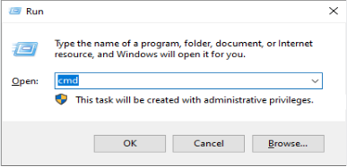
3. Use cmd to open the administrator interface , and the ping command to test the network connection status of the computer and the development board.
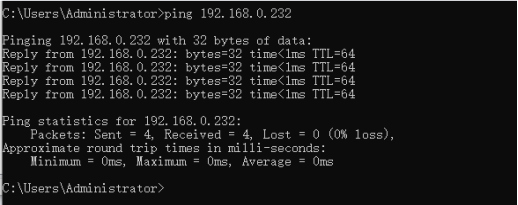
A data return indicates a normal network connection.
2.3.2 SSH Server
Note:
Default factory account root for SSH login with no password;
By default, eth0 has the IP 192.168.0.232, while eth1 and eth2 obtain IP addresses via DHCP;
File transfers can be performed with scp or sftp.
Plug the Ethernet cable into the eth1 port on the carrier board to obtain the eth1 IP address.
eth0: flags=-28669<UP,BROADCAST,MULTICAST,DYNAMIC> mtu 1500
ether ce:66:26:18:5e:bd txqueuelen 1000 (Ethernet)
RX packets 0 bytes 0 (0.0 B)
RX errors 0 dropped 0 overruns 0 frame 0
TX packets 0 bytes 0 (0.0 B)
TX errors 0 dropped 0 overruns 0 carrier 0 collisions 0
eth1: flags=-28605<UP,BROADCAST,RUNNING,MULTICAST,DYNAMIC> mtu 1500
inet 192.168.1.3 netmask 255.255.255.0 broadcast 192.168.1.255
inet6 fe80::cc66:26ff:fe18:8660 prefixlen 64 scopeid 0x20<link>
inet6 2408:8207:78d0:9890:cc66:26ff:fe18:8660 prefixlen 64 scopeid 0x0<global>
ether ce:66:26:18:86:60 txqueuelen 1000 (Ethernet)
RX packets 2116 bytes 648728 (633.5 KiB)
RX errors 0 dropped 0 overruns 0 frame 0
TX packets 254 bytes 31935 (31.1 KiB)
TX errors 0 dropped 0 overruns 0 carrier 0 collisions 0
eth2: flags=-28605<UP,BROADCAST,RUNNING,MULTICAST,DYNAMIC> mtu 1500
inet 169.254.54.50 netmask 255.255.0.0 broadcast 169.254.255.255
inet6 fe80::cc66:26ff:fe18:5a89 prefixlen 64 scopeid 0x20<link>
ether ce:66:26:18:5a:89 txqueuelen 1000 (Ethernet)
RX packets 0 bytes 0 (0.0 B)
RX errors 0 dropped 0 overruns 0 frame 0
TX packets 76 bytes 20860 (20.3 KiB)
TX errors 0 dropped 0 overruns 0 carrier 0 collisions 0
lo: flags=73<UP,LOOPBACK,RUNNING> mtu 65536
inet 127.0.0.1 netmask 255.0.0.0
inet6 ::1 prefixlen 128 scopeid 0x10<host>
loop txqueuelen 1000 (Local Loopback)
RX packets 315 bytes 450225 (439.6 KiB)
RX errors 0 dropped 0 overruns 0 frame 0
TX packets 315 bytes 450225 (439.6 KiB)
TX errors 0 dropped 0 overruns 0 carrier 0 collisions 0
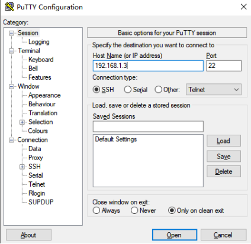
Click “Open”, the following dialog box will appear, click “accept” to enter the login interface.

login as: root
Last login: //root, without password,forlinx, user password:forlinx
root@ok-mx95-c:~#
You can use FileZilla (installation package provided by Forlinx: User Documents\Software Documents\3-Tools) to transfer files via SFTP.
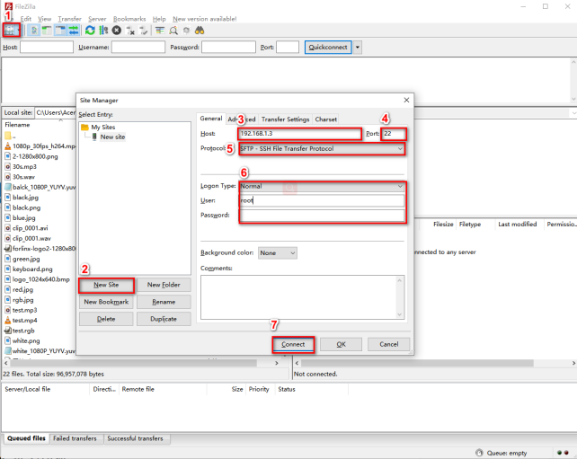
2.4 System Partition
2.4.1 EMMC Version
The following table is the eMMC memory partition information of Linux operating system:
Device Nodes |
Initial Address |
Size |
Partition |
File system |
Content |
|---|---|---|---|---|---|
mmcblk0boot0 |
0 |
4MB |
No |
No |
bootloader image |
mmcblk0 |
0x700000 |
0x4000 |
No |
No |
Uboot environment variable |
mmcblk0 |
0x800000 |
120MB |
mmcblk0p1 |
Vfat |
Kernel image and device tree, etc |
mmcblk0 |
0x8000000 |
Full eMMC capacity remaining |
mmcblk0p2 |
Ext4 |
root file system |
Use the df command to view disk usage on a system. The following image shows the default disk usage at factory settings (eMMC size: 16GB with a QT file system). This is for reference only; actual parameters may vary.
root@ok-mx95-c:~# df -Th
Filesystem Type Size Used Avail Use% Mounted on
/dev/root ext4 54G 4.3G 48G 9% /
devtmpfs devtmpfs 3.2G 4.0K 3.2G 1% /dev
tmpfs tmpfs 3.8G 6.2M 3.8G 1% /dev/shm
tmpfs tmpfs 1.6G 11M 1.5G 1% /run
tmpfs tmpfs 4.0M 0 4.0M 0% /sys/fs/cgroup
tmpfs tmpfs 3.8G 8.0K 3.8G 1% /tmp
tmpfs tmpfs 3.8G 280K 3.8G 1% /var/volatile
/dev/mmcblk0p1 vfat 120M 35M 86M 29% /run/media/Boot-mmcblk0p1
tmpfs tmpfs 769M 12K 769M 1% /run/user/0
root@ok-mx95-c:~#
Use the free command to check memory usage. The following image shows memory usage during Forlinx debugging (DDR size: 8GB). This is for reference only; actual parameters may vary.
root@ok-mx95-c:~# free -m
total used free shared buff/cache available
Mem: 7687 614 6888 24 322 7072
Swap: 0 0 0
2.5 System Shutdown
In general, the power can be turned off directly. If there is data storage, function use, or other operations, avoid turning off the power arbitrarily during operation to prevent irreversible damage to the file. In such cases, only re-flashing the firmware can resolve the issue. Before powering off, use the sync command to ensure data is fully written.
The command ‘reboot’ can be used to restart the development board. You can also restart the hardware by pressing the RESET key or directly power off and restart.
Note: If the user-designed product using the SoM experiences an unexpected shutdown due to power loss during operation, power-down protection measures can be included in the design to prevent this issue.
2.6 Screen Switching
At present, the 95xx supports LVDS to display the Weston desktop when the image is powered on by default. If it is necessary to modify it to MIPI to display the Weston desktop.
Modify the/etc/xdg/weston/weston. ini configuration file, and close the weston display of LVDS.
root@ok-mx95-c:~#cat /etc/xdg/weston/weston.ini
...
#[output]
#name=HDMI-A-1
#mode=1920x1080@60
#transform=rotate-90
//Add the following configuration
[output]
name=LVDS-1
mode=off
...
3. OK-MX9596-C Platform Interface Function Use and Test
Note:
Users should follow this section when using the screen with the QT file system, but can skip it for non-QT operations;
This chapter details QT functions. With the default device and driver working normally, it’s advisable to test interface functions after command line tests.
QT test program source code path: source sdk/appsrc/forlinx-qt
Testing program path in the development board’s file system: /usr/bin.
This chapter mainly explains the usage of the expansion interfaces on the development board in QT interface. The testing program is only for reference, and users need to make adjustments based on their actual situations when using it.
3.1 Introduction to Interface Function
The desktop is displayed as follows after the board booting:

Note: Icon order may vary.
3.2 Network Configuration Test
Note:
By factory default, only the eth0 network card is set to STATIC mode;
The set IP and other information will be saved to the relevant configuration file (/etc/systemd/network directory) of the system, so the network information set this time will be used every time the system is restarted.
Icon：
Clicking on the network configuration icon will open a interface program that supports two modes: STATIC and DHCP.
STATIC mode
After clicking on the network configuration icon, select the STATIC mode as shown in the figure. You can then configure the IP address, subnet mask, gateway, and DNS settings. Once you have set the parameters, click on “Apply and Restart Network”.
Relevant Parameter |
Meaning |
|---|---|
interface |
Set up the network card |
ip |
Set the IP address |
netmask |
Set the subnet mask |
gateway |
Set up the gateway |
dns |
Set DNS |

DHCP mode:
Note: Testing must be done on a router that supports automatic IP allocation.
Select DHCP, select the network card device to be configured in Interface, and click “Apply and Restart Network” at the bottom of the interface to apply the settings and restart the network.

3.3 OpenGL Test
Icon：
OK-MX9596-C supports EGL 1.5，OpenGL ES2.
Click the icon to enter the OpenGL test interface.

3.4 4G/5G Test
Icon：
The 4G test program is used to test the external 4G module (EC20) on the OK-MX95xx-C. Before the test, please power off the development board, connect the module and insert the SIM card (pay attention to the direction of the SIM card), and start the development board Test：

Click the CONNECT button then the program will automatically enter the dialing process and get the IP to set the DNS, etc. After waiting patiently for a few seconds, click the ping button to test it.

3.5 UART Test
Icon：
In this test, ttyLP5 and ttyLP7 are used to test the serial port by short-circuiting pins 1 and 5, pins 2 and 6, pins 3 and 7 of P48 respectively.
Click the UART test icon to enter the test application interface, click the gear iconsetting button in the upper left corner, and set the serial port parameters as shown in the figure below:
Relevant Parameter
Meaning
Select Serial Port
Set the serial port (select ttyLP7)
BaudRate
Set baud rate (115200)
Data bits
Set data bits (8 bits)
Parity
Set parity bit (no parity)
Stop bits
Set stop bit (1 bit)
Flow control
Set flow control (no flow control)
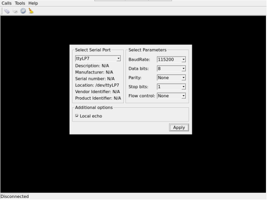
2. After setting the serial port parameters, click the connection button “” in the upper left corner. At this time, the test program can carry out the data receiving and sending test.
3. Run the serial port send test command in the terminal. The received data will be displayed on the screen.
root@ok-mx95-c:~# fltest_uarttest -d /dev/ttyLP5 -b 115200 -w
tx_0: NmROqBVoYMoWf3aodGUCUnyDkdmYDpIY
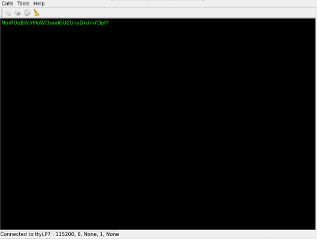
Run the serial port receive test command in the terminal. When you click the test interface, a virtual keyboard will appear. After entering 32 consecutive characters, the terminal will print the data sent by QT.
root@ok-mx95-c:~# fltest_uarttest -d /dev/ttyLP5 -r
rx_0: 12345678901234567890123456789012
root@ok-mx95-c:~#

Note: The data entered via the virtual keyboard will only appear on the test interface after pressing “Enter”. Please enter “01234567890123456789012345678901” continuously, then press “Enter” on the virtual keyboard.
3.6 WIFI Test
Note: The OK-MX9596-C development board has an on-board AW-CM276NF WiFi chip operating at 2.4 GHz/5 GHz.
“WIFI” is a tool for configuring and testing the STA (station) mode of Wi-Fi.
1. Click icon to enter test interface, select module from dropdown, enter SSID for Wi-Fi connection.
to enter test interface, select module from dropdown, enter SSID for Wi-Fi connection.
Router name, enter the router password in the PAWD column, click “connect” to connect to the router through WiFi.

2. After the connection is successful, click “ping” to test the network after setting the IP.

3.7 RTC Test
Note: Ensure button cell batteries are installed & voltage is normal.
Icon：
RTC test includes setting time, power cycling, rerunning test software, and verifying RTC sync.
Run the RTC test software to view and set the current system time with the following interface:

Click “set” to adjust the time settings, then click “save” to finish the settings. After powering off and waiting, reboot and rerun the RTC test software to synchronize and confirm the RTC test is normal.
3.8 Watchdog Test
Icon：
“Watchdog” tests the functionality of the watchdog feature. Interface as follows:
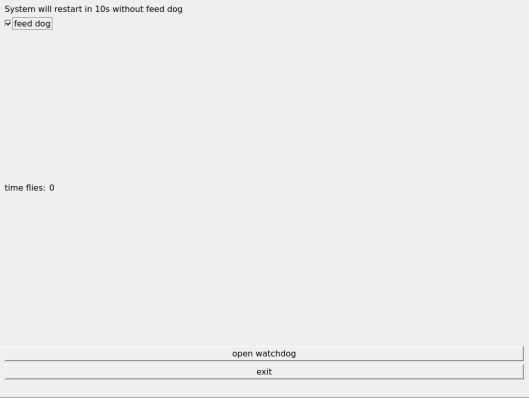
Checking “feed dog” & clicking “open watchdog” starts watchdog function with dog-feeding. System shouldn’t restart under normal conditions.
Unchecking “Feed Dog” & clicking “Activate Watchdog” starts watchdog function without dog-feeding. After about 10 seconds, the system restarts, indicating normal watchdog function.”
3.9 Ping Test
Icon：
“Ping” is a graphical tool for network testing, offering a user-friendly interface for ping operations.
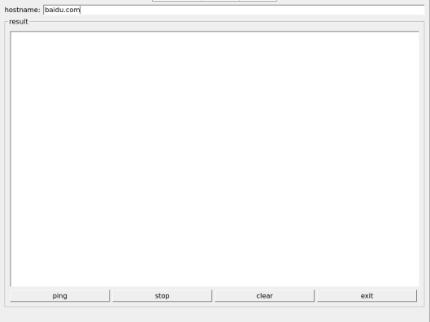
Write the target ip needing ping in the hostname field; after clicking the ping button, the RESULT column will indicate the result, click stop to end the ping test and clear to clean the information in the result.
As shown in the figure, the network connection is smooth.
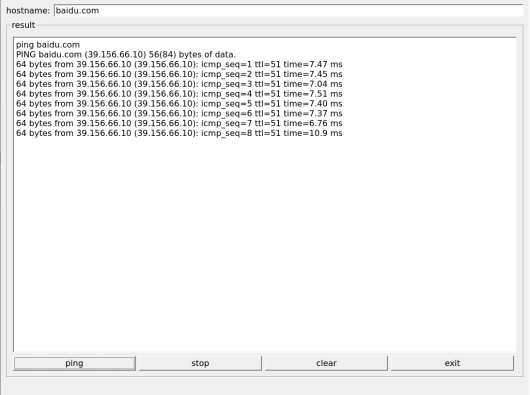
3.10 Camera Test
Icon：
Click the icon to enter the camera test program and insert the USB camera.
Note: Currently, only UVC cameras are supported; MIPICSI cameras are not yet supported.
Choose the camera video device node;
Set the camera resolution;
Click “Start” to capture video;
Click “Stop” to end capture;
Click “Picture” to take a photo;
Take the Logitech UVC camera as an example to conduct the camera test.

Click the Picture button to take a photo. The file is saved in /home/root/in jpg format. Use an appropriate tool on Windows to view it.
3.11 Backlight Test
Icon：
“BackLight” is an LCD backlight adjustment App with a left-right progress bar for brightness control. Click to open the interface as follows:
Drag the slider for the corresponding screen to adjust the backlight brightness. Level 1 is the lowest, and 255 is the highest. PWM1 controls the LVDS screen, and PWM2 controls the MIPI screen. Forlinx has made restrictions on this application. It is not allowed to use the QT application to completely turn off the backlight. If you want to completely turn off the backlight, please use the command line program or modify the QT test routine.
3.12 Play/Record Test
Icon：
Before starting the recording test, plug a prepared headset into the carrier board’s headphone jack. The carrier board mic and headset mic correspond to the left and right recording channels. Click the icon to open the recording test application to check if the sound card recording function is working properly.
Choose where to save the recording file. Click “Start” to begin recording and “Stop” to end.
In the Input Device radio box, select the second option: “Built-in Audio Stereo”, which corresponds to the NAU88C22 input device.
Then, select the following options:
Audio Codec: “Wave”
FILE Container: “Wave File”
Channels: 2
The interface will appear as shown below.
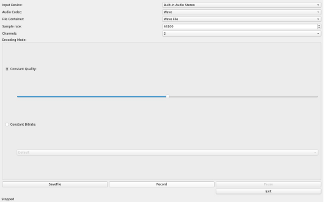
Click the Record button to test the recording. The recording file is saved to the/tmp/record _ *.wav file in the root directory.
Note: The/tmp directory is tmpfs and the files in it are not saved after reboot. It can be copied to a PC or played using the music player test program below.
3.13 Music Play Test
Icon: 
“music player” is a simple audio test application that can be used to test the function of the sound card or as a simple audio player.
Application Interfaces
Click the Open button in the lower left corner and select test audio/home/forlinx/audio/test.mp3. Select the sound card Built-in Audio Stereo in the lower left corner.
There is currently a problem with the Select Sound button, which may cause the interface to get stuck.
3.14 QML Video Playback Test
Icon：
Note: Currently, only Video Modes are supported. Camera Modes are not supported.
Qml Video supports video playback in H264 and H265 formats, with a maximum of 4k 60fps.
The qml video test program can play video based on qml. Click the icon to enter the test program interface.
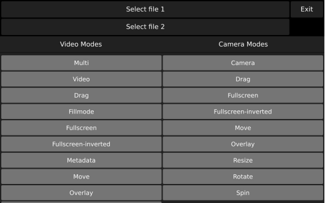
Click Select File 1 at the top, select the video file, and test the video file path:/home/forlinx/video/
Click Full Screen-inverted to start playing the video in full screen.

3.15 Browser Test
Icon：
Note: Before testing, check whether the time of the development board is accurate, and check the network situation. Note: If the development board time is abnormal, it will cause certificate problems.
Click the icon to enter the browser interface and enter the official website of forlinx by default.

4. OK- MX9596-C Command Line Function Test
OK-MX9596-C platform has a wealth of built-in command line tools and FORLINX test programs available to users.
FORLINX test program source code path: sdk/appsrc/forlinx-cmd
Testing program path: “path”: /usr/bin
4.1 System Information Queries
To view the kernel information, enter the following command:
root@ok-mx95-c:~# uname -a
Linux ok-mx95-c 6.6.3+ #1 SMP PREEMPT Wed Jun 26 12:54:47 CST 2024 aarch64 GNU/Linux
To view CPU information:
root@ok-mx95-c:~# cat /proc/cpuinfo
processor : 0
BogoMIPS : 48.00
Features : fp asimd evtstrm aes pmull sha1 sha2 crc32 atomics fphp asimdhp cpuid asimdrdm lrcpc dcpop asimddp
CPU implementer : 0x41
CPU architecture: 8
CPU variant : 0x2
CPU part : 0xd05
CPU revision : 0
processor : 1
BogoMIPS : 48.00
Features : fp asimd evtstrm aes pmull sha1 sha2 crc32 atomics fphp asimdhp cpuid asimdrdm lrcpc dcpop asimddp
CPU implementer : 0x41
CPU architecture: 8
CPU variant : 0x2
CPU part : 0xd05
CPU revision : 0
processor : 2
BogoMIPS : 48.00
Features : fp asimd evtstrm aes pmull sha1 sha2 crc32 atomics fphp asimdhp cpuid asimdrdm lrcpc dcpop asimddp
CPU implementer : 0x41
CPU architecture: 8
CPU variant : 0x2
CPU part : 0xd05
CPU revision : 0
processor : 3
BogoMIPS : 48.00
Features : fp asimd evtstrm aes pmull sha1 sha2 crc32 atomics fphp asimdhp cpuid asimdrdm lrcpc dcpop asimddp
CPU implementer : 0x41
CPU architecture: 8
CPU variant : 0x2
CPU part : 0xd05
CPU revision : 0
processor : 4
BogoMIPS : 48.00
Features : fp asimd evtstrm aes pmull sha1 sha2 crc32 atomics fphp asimdhp cpuid asimdrdm lrcpc dcpop asimddp
CPU implementer : 0x41
CPU architecture: 8
CPU variant : 0x2
CPU part : 0xd05
CPU revision : 0
processor : 5
BogoMIPS : 48.00
Features : fp asimd evtstrm aes pmull sha1 sha2 crc32 atomics fphp asimdhp cpuid asimdrdm lrcpc dcpop asimddp
CPU implementer : 0x41
CPU architecture: 8
CPU variant : 0x2
CPU part : 0xd05
CPU revision : 0
View environment variable information:
root@ok-mx95-c:~# env
SHELL=/bin/sh
EDITOR=vi
QTWEBENGINE_DISABLE_SANDBOX=1
PWD=/home/root
LOGNAME=root
XDG_SESSION_TYPE=tty
MOTD_SHOWN=pam
HOME=/home/root
LANG=C
WAYLAND_DISPLAY=/run/wayland-0
QT_QPA_PLATFORM=wayland
XDG_SESSION_CLASS=user
TERM=linux
USER=root
SHLVL=1
XDG_SESSION_ID=c2
XDG_RUNTIME_DIR=/run/user/0
PS1=\u@\h:\w\$
TSLIB_TSDEVICE=/dev/input/touchscreen0
HUSHLOGIN=FALSE
PATH=/usr/local/bin:/usr/bin:/bin:/usr/local/sbin:/usr/sbin:/sbin
DBUS_SESSION_BUS_ADDRESS=unix:path=/run/user/0/bus
MAIL=/var/spool/mail/root
_=/usr/bin/env
4.2 Frequency Test
Note: This process changes all CPU cores at the same time.
All cpufreq governor types supported in the current kernel:
root@ok-mx95-c:~# cat \
/sys/devices/system/cpu/cpufreq/policy0/scaling_available_governors
conservative ondemand userspace powersave performance schedutil
The default mode is ondemand. In this mode, the CPU frequency will be adjusted according to the demand. Check the current CPU freq governor type:
root@ok-mx95-c:~# cat /sys/devices/system/cpu/cpufreq/policy0/scaling_governor
ondemand
To view the frequency gears supported by the CPU:
root@ok-mx95-c:~# cat \
/sys/devices/system/cpu/cpufreq/policy0/scaling_available_frequencies
667000 900000 1404000 1800000
To view the current frequency:
root@ok-mx95-c:~# cat /sys/devices/system/cpu/cpufreq/policy0/scaling_cur_freq
667000
You can adjust the CPU frequency directly, setting governor to userspace
root@ok-mx95-c:~# echo userspace > \
/sys/devices/system/cpu/cpufreq/policy0/scaling_governor
Set frequency and view:
root@ok-mx95-c:~# echo 1800000 > \
/sys/devices/system/cpu/cpufreq/policy0/scaling_setspeed
root@ok-mx95-c:~# cat /sys/devices/system/cpu/cpufreq/policy0/scaling_cur_freq
1800000
4.3 Temperature Test
View the temperature value:
root@ok-mx95-c:~# cat /sys/class/thermal/thermal_zone0/temp
57030
The temperature value is 57°C.
The temperature control function can be tested by inputting a simulated temperature. Automotive-grade i.MX95 with a junction temperature of 125 degrees Celsius. The temperature control module will shut down the system when it reaches 125°C to prevent exceeding the temperature limit. Industrial grade i.MX95 with a junction temperature of 105 degrees Celsius. The example in this manual uses automotive grade chips. Enter the following command to simulate the process:
root@ok-mx95-c:~# echo 125000 > /sys/class/thermal/thermal_zone0/emul_temp
[ 1923.447235] thermal thermal_zone0: a55: critical temperature reached, shutting down
[ 1923.454969] reboot: HARDWARE PROTECTION shutdown (Temperature too high)
......
[ 1927.471978] reboot: HARDWARE PROTECTION shutdown (Temperature too high)
[ 1927.478059] ci_hdrc ci_hdrc.0: USB bus 1 deregistered
[ 1927.489922] kvm: exiting hardware virtualization
[ 1927.494575] reboot: Power down
4.4 DDR Bandwidth Test
root@ok-mx9596-c:~# fltest_memory_bandwidth.sh
L1 cache bandwidth rd test with # process
0.008192 26017.45
0.008192 26014.21
0.008192 25985.90
0.008192 26004.77
0.008192 26018.93
L2 cache bandwidth rd test
0.131072 11680.95
0.131072 11648.00
0.131072 11637.94
0.131072 11643.45
0.131072 11617.58
Main mem bandwidth rd test
52.43 5779.83
52.43 5797.72
52.43 5779.19
52.43 5790.68
52.43 5780.46
L1 cache bandwidth wr test with # process
0.008192 25411.28
0.008192 25411.28
0.008192 25331.32
0.008192 25352.87
0.008192 25402.05
L2 cache bandwidth wr test
0.131072 12276.13
0.131072 12211.53
0.131072 12955.67
0.131072 12328.08
0.131072 12457.06
Main mem bandwidth wr test
52.43 1703.84
52.43 1706.33
52.43 1706.44
52.43 1704.34
52.43 1705.06
......
The LPDDR4x bandwidth of the mx9596 is shown above, with a read bandwidth of about 5800M/s and a write bandwidth of about 1700M/s.
4.5 Watchdog Test
Watchdog is a frequently used function in embedded systems, and the device node for the watchdog in OK-MX9596-C is /dev/watchdog.
Use fltest_watchdog to start the watchdog, set the reset time to 10s, and feed the dog regularly. This command will turn on the watchdog and perform the dog-feeding operation, so the system will not reboot.
root@ok-mx95-c:~# fltest_watchdog -t10 -c
Watchdog Ticking Away!
When ctrl + C is used to end the test procedure, the dog feeding is stopped, the watchdog is in the open state, and the system is reset after 10s; If you do not want to reset, please enter the command to close the watchdog within 10 seconds after the end of the program:
root@ok-mx95-c:~# fltest_watchdog -d //Turn off the watchdog
Watchdog card disabled.
Start the watchdog, set the reset time for 10s, and do not feed the dog. This command turns on the watchdog, but does not feed the dog, and the system restarts after 10 seconds.
root@ok-mx95-c:~# fltest_watchdog -t10 -e
Watchdog card ena[ 157.382703] watchdog: watchdog0: watchdog did not stop!
bled.
Restart after 10 seconds.
Note: Note: This watchdog will only reset the A core but not the R core.
4.6 RTC Function Test
Note: Ensure button cell batteries are installed & voltage is normal.
RTC Test: The test primarily involves using the date and hwclock tools to set the software and hardware time. The goal is to check whether the software clock is synchronized with the RTC clock when the board is powered off and then powered on again.
root@ok-mx95-c:~# date -s "2024-06-28 14:02:00" //Set software time
Fri Jun 28 14:02:00 CST 2024
root@ok-mx95-c:~# hwclock -w //Synchronize software time to hardware time
root@ok-mx95-c:~# hwclock -r //Display hardware time
2024-06-28 14:02:33.149924+08:00
After powering off and then powering on the development board, once the system starts, read the system time. You should see that the time is still synchronized with the RTC.
root@ok-mx95-c:~# date
Fri Jun 28 14:05:32 CST 2024
4.7 UART Test
OK-MX9596-C development board is equipped with 4 x UART, as shown in the following table:
UART |
Device Nodes |
Description |
|---|---|---|
UART6 |
ttyLP5 |
RS485 level, can be used for this test. |
UART8 |
ttyLP7 |
RS485 level, can be used for this test. |
UART1 |
ttyLP0 |
The debug serial port cannot be used for this test. |
UART5 |
ttyLP4 |
Bluetooth can not be used for the test. |
485 supports commonly used baud rates such as 9600115200, with a maximum support of 4000000, parity check, CS5, CS6, CS7, CS8, and 1-bit and 2-bit stop bits.
In this test, ttyLP5 and ttyLP7 are used to test the serial port by short-circuiting pins 1 and 5, pins 2 and 6, pins 3 and 7 of P48 respectively.

root@ok-mx95-c:~# fltest_uarttest -d /dev/ttyLP5 -r &
[1]1003
root@ok-mx95-c:~# fltest_uarttest -d /dev/ttyLP7 -w
tx_0: b8fui4eFZ2ifziP03da602fDUKF9bVhA
rx_0: b8fui4eFZ2ifziP03da602fDUKF9bVhA
root@ok-mx95-c:~#
[1]+ Done fltest_uarttest -d /dev/ttyLP5 -r
root@ok-mx95-c:~#
4.8 PCIE
The current A0 version CPU does not support PCIE interface.
4.9 TF Test
Note:
The TF card mount directory is /run/media/ and supports hot-swapping;
The system does not support the **NTFS** file system. If you are unsure about the format of the TF card, it is recommended to format it to **FAT32** or **EXFAT** before use;
After inserting the TF card, the device node is “/dev/mmcblk1 *”.
1. Insert the TF card into the TF card slot on the carrier board. The printed information is as follows:
[ 425.084206] mmc1: host does not support reading read-only switch, assuming write-enable
[ 425.121604] mmc1: new ultra high speed SDR104 SDHC card at address aaaa
[ 425.128807] mmcblk1: mmc1:aaaa SL16G 14.8 GiB
[ 425.138599] mmcblk1: p1 p2
[ 427.615710] EXT4-fs (mmcblk1p2): mounted filesystem cfc225f0-8969-46d1-aab2-f8f075645966 r/w with ordered data mode. Quota mode: none.
2. Check the mount directory:
The TF card mount directory is as follows:
root@ok-mx95-c:~# ls /run/media/ //List files in the/run/media directory
Boot-mmcblk0p1 mmcblk1p1 mmcblk1p2
3. Write test:
Note: Before writing, please ensure that the TF card has enough partition space. Use the\mmcblk1p2\ partition for testing.
root@ok-mx95-c:~# dd if=/dev/zero of=/run/media/mmcblk1p2/test.bin bs=100M count=5 conv=fsync oflag=direct
5+0 records in
5+0 records out
524288000 bytes (524 MB, 500 MiB) copied, 45.7479 s, 11.5 MB/s
4. Read test:
Note: To ensure the accuracy of the data, please restart the development board to test the reading speed.
root@ok-mx95-c:~# dd if=/run/media/mmcblk1p2/test.bin of=/dev/null bs=100M iflag=direct
5+0 records in
5+0 records out
524288000 bytes (524 MB, 500 MiB) copied, 5.9345 s, 88.3 MB/s
Note: Plug and unplug the TF card after exiting the TF card mounting path.
4.10 EMMC Test
The OK-MX9596-C platform eMMC runs in HS400 mode 200MHz clock by default. The following is a simple eMMC read/write speed test: taking the read/write ext4 file system as an example.
Write test:
root@ok-mx95-c:~# dd if=/dev/zero of=/data.img bs=100M count=5 conv=fsync oflag=direct
5+0 records in
5+0 records out
524288000 bytes (524 MB, 500 MiB) copied, 3.66049 s, 143 MB/s
Read test：
Note: To ensure the accuracy of the data, please restart the development board to test the reading speed.
root@ok-mx95-c:~# dd if=/data.img of=/dev/null bs=100M count=5 iflag=direct
5+0 records in
5+0 records out
524288000 bytes (524 MB, 500 MiB) copied, 2.29699 s, 228 MB/s
4.11 USB
OK-MX9596-C supports 3 x USB 2.0 interfaces and 1 x USB Type-C interface. Users can connect USB mouse, USB keyboard, U disk and other devices on the on-board USB HOST interface, and support the hot plug of the above devices.
Note:
Support hot-plugging of USB flash drive devices;
If NTFS isn’t supported and you’re unsure of the USB drive’s format, it’s best to format it to FAT32 before using it.
4.11.1 USB2.0
Connect the USB mouse to the USB interface of the OK-MX9596-C platform, and the print information of the serial port terminal is as follows:
[12554.566931] usb 1-1.2: new low-speed USB device number 3 using ci_hdrc
[12554.808120] input: PixArt Lenovo USB Optical Mouse as /devices/platform/soc/4c200000.usb/ci_hdrc.0/usb1/1-1/1-1.2/1-1.2:1.0/0003:17EF:608D.0001/input/input5
[12554.822433] hid-generic 0003:17EF:608D.0001: input: USB HID v1.11 Mouse [PixArt Lenovo USB Optical Mouse] on usb-ci_hdrc.0-1.2/input0
At this time, the arrow cursor appears on the screen, the mouse can work normally.
Unplug the USB mouse, the printed information from the serial port terminal is as follows:
[ 456.479673] usb 1-1.2: USB disconnect, device number 3
Next, take the U disk as an example for demonstration.
The terminal will print the information about the USB flash disk. Due to the different models of the USB flash disk, the displayed information may be different:
1. After the development board starts, insert the USB disk into the USB2.0 host interface on the development board.
Serial port information:
[ 529.870746] usb 1-1.4: new high-speed USB device number 4 using ci_hdrc
[ 530.087135] usb-storage 1-1.4:1.0: USB Mass Storage device detected
[ 530.099489] scsi host0: usb-storage 1-1.4:1.0
[ 531.111948] scsi 0:0:0:0: Direct-Access SanDisk Cruzer Blade 1.00 PQ: 0 ANSI: 6
[ 531.124889] sd 0:0:0:0: [sda] 60125184 512-byte logical blocks: (30.8 GB/28.7 GiB)
[ 531.133649] sd 0:0:0:0: [sda] Write Protect is off
[ 531.139144] sd 0:0:0:0: [sda] Write cache: disabled, read cache: enabled, doesn't support DPO or FUA
[ 531.161387] sda: sda1
[ 531.164162] sd 0:0:0:0: [sda] Attached SCSI removable disk
2. Check the mount directory:
root@ok-mx95-c:~# ls /run/media/
Boot-mmcblk0p1 sda1
sda1 is the first partition of the first connected USB storage device, and so on.
3. View the contents of the USB flash drive.：：
root@ok-mx95-c:~# ls -l /run/media/sda1
total 16
drwxrwx--- 2 root disk 16384 Apr 9 17:32 'System Volume Information'
4. Write test: Write speeds are limited by the specific storage device:
root@ok-mx95-c:~# dd if=/dev/zero of=/run/media/sda1/test bs=100M count=40 \
conv=fsync oflag=direct
40+0 records in
40+0 records out
4194304000 bytes (4.2 GB, 3.9 GiB) copied, 628.732 s, 6.7 MB/s
5. Read test:
Note: To ensure the accuracy of the data, please restart the development board to test the reading speed.
root@ok-mx95-c:~# dd if=/run/media/sda1/test of=/dev/null bs=100M iflag=direct
40+0 records in
40+0 records out
4194304000 bytes (4.2 GB, 3.9 GiB) copied, 162.978 s, 25.7 MB/s
Note: Unplug the USB disk after exiting the mount path.
4.11.2 USB TYPE-C
OK-MX9596-C supports USB TYPE-C function and fusb302CC chip.
Insert the USB flash disk as the Host side for testing.
1. After the development board starts, connect the USB flash drive to the USB Type-C port using a Type-C to USB cable.
Serial port information:
[ 2218.656133] usb 1-1.4: USB disconnect, device number 4
[ 2218.881306] FAT-fs (sda1): unable to read boot sector to mark fs as dirty
[ 2276.695628] xhci-hcd xhci-hcd.0.auto: xHCI Host Controller
[ 2276.701213] xhci-hcd xhci-hcd.0.auto: new USB bus registered, assigned bus number 2
[ 2276.709374] xhci-hcd xhci-hcd.0.auto: hcc params 0x0220fe4d hci version 0x110 quirks 0x0000002001000010
[ 2276.718880] xhci-hcd xhci-hcd.0.auto: irq 229, io mem 0x4c100000
[ 2276.725122] xhci-hcd xhci-hcd.0.auto: xHCI Host Controller
[ 2276.730658] xhci-hcd xhci-hcd.0.auto: new USB bus registered, assigned bus number 3
[ 2276.738351] xhci-hcd xhci-hcd.0.auto: Host supports USB 3.0 SuperSpeed
[ 2276.745762] hub 2-0:1.0: USB hub found
[ 2276.749564] hub 2-0:1.0: 1 port detected
[ 2276.754002] usb usb3: We don't know the algorithms for LPM for this host, disabling LPM.
[ 2276.763094] hub 3-0:1.0: USB hub found
[ 2276.766906] hub 3-0:1.0: 1 port detected
[ 2277.258748] usb 2-1: new high-speed USB device number 2 using xhci-hcd
[ 2277.412579] usb-storage 2-1:1.0: USB Mass Storage device detected
[ 2277.419282] scsi host0: usb-storage 2-1:1.0
[ 2278.439603] scsi 0:0:0:0: Direct-Access SanDisk Cruzer Blade 1.00 PQ: 0 ANSI: 6
[ 2278.450545] sd 0:0:0:0: [sda] 60125184 512-byte logical blocks: (30.8 GB/28.7 GiB)
[ 2278.458900] sd 0:0:0:0: [sda] Write Protect is off
[ 2278.464111] sd 0:0:0:0: [sda] Write cache: disabled, read cache: enabled, doesn't support DPO or FUA
[ 2278.484133] sda: sda1
[ 2278.487044] sd 0:0:0:0: [sda] Attached SCSI removable disk
2. Check the mount directory:
root@ok-mx95-c:~# ls /run/media/
Boot-mmcblk2p1 sda1
“sda1” represents the first partition of the first USB storage device inserted, and so forth.
3. Write test: Write speeds are limited by the specific storage device:
root@ok-mx95-c:~# dd if=/dev/zero of=/run/media/sda1/test bs=100M count=40 \
conv=fsync oflag=direct
40+0 records in
40+0 records out
4194304000 bytes (4.2 GB, 3.9 GiB) copied, 628.387 s, 6.7 MB/s
4. Read test:
Note: To ensure the accuracy of the data, please restart the development board to test the reading speed.
root@ok-mx95-c:~# dd if=/run/media/sda1/test of=/dev/null bs=100M iflag=direct
40+0 records in
40+0 records out
4194304000 bytes (4.2 GB, 3.9 GiB) copied, 131.639 s, 31.9 MB/s
Note: Unplug the USB disk after exiting the mount path.
5. USB TYPE-C
The USB TYPE-C port can also be used as the device side. Through the CC chip, it supports automatic switching between the host side and the device side.
Connect the USB TYPE-C port of the development board to the PC with an appropriate USB cable, and execute the following command:
root@ok-mx95-c:~# insmod /lib/modules/`uname -a | awk '{print \
$3}'`/kernel/drivers/usb/gadget/legacy/g_mass_storage.ko removable=1 file=/dev/mmcblk0p1
[ 2086.685453] Mass Storage Function, version: 2009/09/11
[ 2086.690678] LUN: removable file: (no medium)
[ 2086.695114] LUN: removable file: /dev/mmcblk0p1
[ 2086.699756] Number of LUNs=1
[ 2086.702793] g_mass_storage gadget.0: Mass Storage Gadget, version: 2009/09/11
[ 2086.710043] g_mass_storage gadget.0: userspace failed to provide iSerialNumber
[ 2086.717286] g_mass_storage gadget.0: g_mass_storage ready
It can be found that the PC will mount the mmcblk0p1 partition as a USB flash drive.

4.12 Ethernet Configuration
OK-MX9596-C has 2 x Gigabit network ports and 1 x10 Gigabit network port on board. The default configuration of eth0 is static IP 192.168.0.232 for the gigabit network card, and the default configuration of eth1 and 10 gigabit network port eth2 is DHCP to obtain the IP address. The NIC of the OK-MX9596-C can be configured via configuration file in/etc/systemd/network.
For the configuration method, please refer to the general operations of https://wiki.archlinux.org/title/Systemd-networkd. Forlinx provides two ways to set a fixed IP address.
4.12.1 Gigabit Ethernet Static IP Configuration
Note: The Gigabit Ethernet cards in the kernel are eth0 and eth1, and the IP configuration needs to ensure that the network hardware is unobstructed.
After booting the development board, execute the following command to open the network configuration file/etc/network/interfaces
root@ok-mx95-c:~# vi /etc/systemd/network/10-eth.network
Content as follows (slight differences may occur after software version updates; users should refer to actual information):
Name is used to specify a network card that requires a fixed IP;
Address is used to specify the IP address to be fixed;
netmask: Used to set the subnet mask;
gateway: Used to specify the gateway;
DNS： Used to specify DNS
Set eth0 to get IP automatically, just delete /etc/systemd/network/10-eth.network. The 10-eth. network can also be modified to follow the 11-eth. network.
/etc/systemd/network/11-eth.network is the configuration file that controls eth1 and is configured to obtain the IP automatically by default. You can modify 11-eth.network by referring to 10-eth.network and configure eth1 with a fixed IP address.
Modify to
[Match]
Name=eth1
KernelCommandLine=!root=/dev/nfs
[Network]
Address=192.168.0.233/24
Gateway=192.168.0.1
DNS=114.114.114.114
4.12.2 Network Port Streaming Test
4.12.2.1 Gigabit Network Port Streaming Test
Note:
Test the communication speed between the development board and the computer to ensure that they can communicate properly;
This test assumes iperf3 is pre-installed on Windows by default.
To test the network speed of OK-MX9596-C’s eth1 interface, you can use the network speed testing tool iperf3.
Run the iperf3 server on the cmd command terminal of Windows:
D:\iperf-3.13.64_64>iperf3.exe -s

Connect the network cable to the eth1 interface. After the system is started, eth1 automatically obtains the IP. Enter the command at the serial port debugging terminal of the development board to test the sending rate of the network port:
root@ok-mx95-c:~# iperf3 -c 192.168.1.5 //Please fill in the host IP address according to the actual situation
Connecting to host 192.168.1.5, port 5201
[ 5] local 192.168.1.17 port 44354 connected to 192.168.1.5 port 5201
[ ID] Interval Transfer Bitrate Retr Cwnd
[ 5] 0.00-1.00 sec 114 MBytes 954 Mbits/sec 0 417 KBytes
[ 5] 1.00-2.00 sec 113 MBytes 944 Mbits/sec 0 417 KBytes
[ 5] 2.00-3.00 sec 112 MBytes 939 Mbits/sec 0 437 KBytes
[ 5] 3.00-4.00 sec 113 MBytes 948 Mbits/sec 0 437 KBytes
[ 5] 4.00-5.00 sec 112 MBytes 940 Mbits/sec 0 437 KBytes
[ 5] 5.00-6.00 sec 112 MBytes 940 Mbits/sec 0 437 KBytes
[ 5] 6.00-7.00 sec 113 MBytes 945 Mbits/sec 0 437 KBytes
[ 5] 7.00-8.00 sec 112 MBytes 937 Mbits/sec 0 457 KBytes
[ 5] 8.00-9.00 sec 113 MBytes 945 Mbits/sec 0 457 KBytes
[ 5] 9.00-10.00 sec 112 MBytes 938 Mbits/sec 0 457 KBytes
- - - - - - - - - - - - - - - - - - - - - - - - -
[ ID] Interval Transfer Bitrate Retr
[ 5] 0.00-10.00 sec 1.10 GBytes 943 Mbits/sec 0 sender
[ 5] 0.00-10.00 sec 1.10 GBytes 941 Mbits/sec receiver
iperf Done.
Test the receiving rate of network port:
root@ok-mx95-c:~# iperf3 -c 192.168.1.5 -R //Please fill in the host IP address according to the actual situation
-----------------------------------------------------------
Server listening on 5201 (test #1)
-----------------------------------------------------------
Accepted connection from 192.168.1.5, port 52875
[ 5] local 192.168.1.17 port 5201 connected to 192.168.1.5 port 52876
[ ID] Interval Transfer Bitrate
[ 5] 0.00-1.00 sec 113 MBytes 947 Mbits/sec
[ 5] 1.00-2.00 sec 113 MBytes 949 Mbits/sec
[ 5] 2.00-3.00 sec 113 MBytes 949 Mbits/sec
[ 5] 3.00-4.00 sec 113 MBytes 949 Mbits/sec
[ 5] 4.00-5.00 sec 113 MBytes 949 Mbits/sec
[ 5] 5.00-6.00 sec 113 MBytes 949 Mbits/sec
[ 5] 6.00-7.00 sec 113 MBytes 949 Mbits/sec
[ 5] 7.00-8.00 sec 113 MBytes 949 Mbits/sec
[ 5] 8.00-9.00 sec 113 MBytes 949 Mbits/sec
[ 5] 9.00-10.00 sec 113 MBytes 949 Mbits/sec
[ 5] 10.00-10.01 sec 640 KBytes 941 Mbits/sec
- - - - - - - - - - - - - - - - - - - - - - - - -
[ ID] Interval Transfer Bitrate
[ 5] 0.00-10.01 sec 1.11 GBytes 949 Mbits/sec receiver
-----------------------------------------------------------
The OK-MX9596-C board has a Gigabit network upload bandwidth of 943 Mbps and a download bandwidth of 949 Mbps.
4.12.2.1 10 Gigabit Network Port Streaming Test
Note:
Test the communication speed between the development board and the computer to ensure that they can communicate properly;
In this test, the iperf3 tool is installed in windows by default, and ensure that the PC supports 10 gigabit network port communication.
Test the network speed of the OK-MX9596-C carrier board eth2 (10 Gigabit optical module port) using the network speed test tool iperf3. Please insert the optical module in the optical module port of the carrier board, and connect the PC and the development board with a network cable that supports 10 gigabit load. Due to the limitation of single-core performance, a single test flow cannot fully utilize the 10-gigabit network port. Therefore, it is necessary to divide it into multiple test flows for simultaneous testing. On the development board, enter the following command to set the data received by the network port to be allocated to different receive queues.
root@ok-mx95-c:~# ethtool -K eth2 receive-hashing on
To run the iperf3 server on the cmd command terminal of Windows, you need to open six cmd command terminals to execute the following commands:
D:\iperf-3.13.64_64>iperf3 -s -p 5201
D:\iperf-3.13.64_64>iperf3 -s -p 5202
D:\iperf-3.13.64_64>iperf3 -s -p 5203
D:\iperf-3.13.64_64>iperf3 -s -p 5204
D:\iperf-3.13.64_64>iperf3 -s -p 5205
D:\iperf-3.13.64_64>iperf3 -s -p 5206
After confirming that the network between the PC and the 10 - gigabit network port of the development board is unobstructed, enter commands in the serial debugging terminal of the development board to test the receiving rate of the network port. Please fill in the host IP address according to the actual situation.
root@ok-mx95-c:~# taskset -c 0 iperf3 -c 192.168.1.166 -t100 -R -p 5201 > iperf3_cpu0.log &
root@ok-mx95-c:~# taskset -c 1 iperf3 -c 192.168.1.166 -t100 -R -p 5202 > iperf3_cpu1.log &
root@ok-mx95-c:~# taskset -c 2 iperf3 -c 192.168.1.166 -t100 -R -p 5203 > iperf3_cpu2.log &
root@ok-mx95-c:~# taskset -c 3 iperf3 -c 192.168.1.166 -t100 -R -p 5204 > iperf3_cpu3.log &
root@ok-mx95-c:~# taskset -c 4 iperf3 -c 192.168.1.166 -t100 -R -p 5205 > iperf3_cpu4.log &
root@ok-mx95-c:~# taskset -c 5 iperf3 -c 192.168.1.166 -t100 -R -p 5206 > iperf3_cpu5.log &
After the test is completed, the rates of the six test flows are added to obtain the actual rate of the network port. Test the receiving and sending rate of the network port, and remove the -R in the above command.
4.13 Network Services
Note: The default IP for eth0 is 192.168.0.232.
4.13.1 Web Services
Note: To properly use this feature, the PC’s IP address must be in the same network segment as the development board’s.
The OK-MX9596-C development board comes with the lighttpd web server pre-installed, and the lighttpd service has been automatically started at system startup. Enter the IP address of the board into the PC browser to view the web pages in the board’s webserver, as shown in the following figure:

4.13.2 SFTP
See Section 2.3.2 SSH Server.
4.14 WIFI Test
Note: The OK-MX9596-C core board is equipped with the AW-CM358SM WiFi & BT module, supporting operating frequencies of 2.4 GHz and 5 GHz.
4.14.1 STA Mode
Note:
Due to the different network environments, please set up according to the actual situation when conducting this test;
The development board supports the connection of 2.4G and 5G wireless hotspots.
This mode connects to the wireless network as a client. In the following test, the router uses WPA encryption, the connected wifi hotspot name is: H3C_708 and the password is: 123456785. Due to the different network environments, please set up according to the actual situation when conducting this test:
Before testing, please ensure that the WiFi firmware has been added to the corresponding path (such as sdiouart8987_combo-v0.bin loaded into the/lib/firmware/nxp path); in addition, the service that automatically loads the wifi driver is/etc/obexd_init;
1. Enter the following command in the development board terminal:
The meanings of the related parameters in the command are as follows:
Parameter |
Meaning |
|---|---|
-i |
Wireless NIC Node Name |
-s |
Actual wifi hotspot connected |
-p |
The following parameter Password refers to the actual wifi hotspot password to connect to. |
The serial port prints as follows:
root@ok-mx95-c:~# fltest_wifi_sta.sh -i mlan0 -s H3C_708 -p 123456785.
[ 80.711437] fsl_enetc4 0002:00:08.0 eth1: Link is Down
[ 80.736849] fsl_enetc4 0002:00:10.0 eth2: Link is Down
wifi mlan0
ssid H3C_708
pasw 123456785.
[ 82.965762] wlan: mlan0 START SCAN
[ 87.309942] wlan: SCAN COMPLETED: scanned AP count=8
[ 87.322241] wlan: HostMlme mlan0 send auth to bssid 14:XX:XX:XX:fc:84
[ 87.330008] mlan0:
[ 87.330020] wlan: HostMlme Auth received from 14:XX:XX:XX:fc:84
[ 87.343219] CMD_RESP: cmd 0x121 error, result=0x2
[ 87.347941] IOCTL failed: 000000009539a3d5 id=0x200000, sub_id=0x200024 action=2, status_code=0x3
[ 87.356815] Get multi-channel policy failed
[ 87.370757] wlan: HostMlme mlan0 Connected to bssid 14:XX:XX:XX:fc:84 successfully
[ 87.380304] mlan0:
[ 87.380324] wlan: Send EAPOL pkt to 14:XX:XX:XX:fc:84
[ 87.391942] mlan0:
[ 87.391954] wlan: Send EAPOL pkt to 14:XX:XX:XX:fc:84
[ 87.401101] woal_cfg80211_set_rekey_data return: gtk_rekey_offload is DISABLE
[ 88.647425] warning: `ThreadPoolForeg' uses wireless extensions which will stop working for Wi-Fi 7 hardware; use nl80211
udhcpc: started, v1.36.1
Dropped protocol specifier '.udhcpc' from 'mlan0.udhcpc'. Using 'mlan0' (ifindex=9).
udhcpc: broadcasting discover
udhcpc: broadcasting select for 192.168.1.35, server 192.168.1.1
udhcpc: lease of 192.168.1.35 obtained from 192.168.1.1, lease time 86400
/etc/udhcpc.d/50default: Adding DNS 192.168.1.1
Dropped protocol specifier '.udhcpc' from 'mlan0.udhcpc'. Using 'mlan0' (ifindex=9).
connect ok
2. Check whether it can ping the external network and enter the following command in the terminal:
root@ok-mx95-c:~# ping -I mlan0 www.baidu.com -c 3 //Specify mlan0 network card to ping 3 times
PING www.baidu.com(2408:871a:2100:2:0:ff:b09f:237 (2408:871a:2100:2:0:ff:b09f:237)) from 2408:8207:78d0:e200:aa41:f4ff:fe8b:b039 mlan0: 56 data bytes
64 bytes from 2408:871a:2100:2:0:ff:b09f:237 (2408:871a:2100:2:0:ff:b09f:237): icmp_seq=1 ttl=54 time=1094 ms
64 bytes from 2408:871a:2100:2:0:ff:b09f:237 (2408:871a:2100:2:0:ff:b09f:237): icmp_seq=2 ttl=54 time=85.4 ms
64 bytes from 2408:871a:2100:2:0:ff:b09f:237 (2408:871a:2100:2:0:ff:b09f:237): icmp_seq=3 ttl=54 time=209 ms
--- www.baidu.com ping statistics ---
3 packets transmitted, 3 received, 0% packet loss, time 2010ms
rtt min/avg/max/mdev = 85.362/462.560/1093.642/449.072 ms, pipe 2
4.14.2 AP Mode
Note: Ensure that the Gigabit LAN card is eth1 connected to the network before performing this test.
The hotspot name and password can be viewed in the /etc/hostapd-2.4g.conf** or /etc/hostapd-5g.conf files.
root@ok-mx95-c:~# fltest_hostapd.sh -B 5g
BAND 5g
waiting...
[ 91.135537] ...
uap0: interface state UNINITIALIZED->COUNTRY_UPDATE
[ 93.396646] wlan: uap0 Starting AP
[ 93.400894] CMD_RESP: cmd 0x121 error, result=0x2
[ 93.405632] IOCTL failed: 0000000049ba4102 id=0x200000, sub_id=0x200024 action=2, status_code=0x2
[ 93.414507] Get multi-channel policy failed
[ 93.419195] fw doesn't support 11ax
[ 93.433924] wlan: uap0 AP started
[ 93.438359] wlan: HostMlme uap0 send deauth/disassoc
[ 93.444446] Set AC=3, txop=47 cwmin=3, cwmax=7 aifs=1
[ 93.451595] Set AC=2, txop=94 cwmin=7, cwmax=15 aifs=1
[ 93.458730] Set AC=0, txop=0 cwmin=15, cwmax=63 aifs=3
[ 93.465847] Set AC=1, txop=0 cwmin=15, cwmax=1023 aifs=7
enable ap ok
udhcpd: started, v1.36.1
You can then use a mobile phone or other devices to connect to IMX95_WIFI_5G_AP.
The 2.4G mode is as follows:
root@ok-mx95-c:/# fltest_hostapd.sh -B 2.4g
BAND 2.4g
waiting...
[ 325.086398] ...
[ 327.275755] wlan: uap0 Starting AP
[ 327.279987] CMD_RESP: cmd 0x121 error, result=0x2
[ 327.284697] IOCTL failed: 00000000f607e72d id=0x200000, sub_id=0x200024 action=2, status_code=0x2
[ 327.293562] Get multi-channel policy failed
[ 327.298238] fw doesn't support 11ax
[ 327.310849] wlan: uap0 AP started
[ 327.315456] wlan: HostMlme uap0 send deauth/disassoc
[ 327.321514] Set AC=3, txop=47 cwmin=3, cwmax=7 aifs=1
[ 327.328520] Set AC=2, txop=94 cwmin=7, cwmax=15 aifs=1
[ 327.335625] Set AC=0, txop=0 cwmin=15, cwmax=63 aifs=3
[ 327.342768] Set AC=1, txop=0 cwmin=15, cwmax=1023 aifs=7
uap0: interface state UNINITIALIZED->ENABLED
uap0: AP-ENABLED
enable ap ok
udhcpd: started, v1.36.1
You can then use a device such as a mobile phone to connect to the IMX95_WIFI_2.4G_AP.
4.15 4G Test
The OK-MX9596-C supports EC20 4G modules.
Note: Before powering on the development board, insert the 4G module and SIM card, then start the board.
1. Connect the EC20 module to the OK-MX9596-C development board. After it is powered on and started, the USB status can be viewed through the lsusb command. The EC25 line is the 4G module:
root@ok-mx95-c:~# lsusb
Bus 001 Device 004: ID 2c7c:0125 Quectel Wireless Solutions Co., Ltd. EC25 LTE modem
Bus 001 Device 002: ID 1a40:0101 Terminus Technology Inc. Hub
Bus 001 Device 001: ID 1d6b:0002 Linux Foundation 2.0 root hub
2. Taking the example of inserting a China Unicom SIM card to test 4G internet access, follow these steps to check if the network is working properly:
root@ok-mx95-c:~# fltest_quectel.sh &
[1] 912
root@ok-mx95-c:~# [ 153.460864] fsl_enetc4 0002:00:08.0 eth1: Link is Down
[ 153.642886] fsl_enetc4 0002:00:10.0 eth2: timeout for tx ring #0 clear
[ 153.798883] fsl_enetc4 0002:00:10.0 eth2: timeout for tx ring #1 clear
[ 153.958871] fsl_enetc4 0002:00:10.0 eth2: timeout for tx ring #2 clear
[ 154.114893] fsl_enetc4 0002:00:10.0 eth2: timeout for tx ring #3 clear
[ 154.270878] fsl_enetc4 0002:00:10.0 eth2: timeout for tx ring #4 clear
[ 154.426878] fsl_enetc4 0002:00:10.0 eth2: timeout for tx ring #5 clear
[ 154.433494] fsl_enetc4 0002:00:10.0 eth2: Link is Down
[07-02_09:48:25:227] Quectel_QConnectManager_Linux_V1.6.0.24
[07-02_09:48:25:228] Find /sys/bus/usb/devices/1-1.1 idVendor=0x2c7c idProduct=0x125, bus=0x001, dev=0x004
[07-02_09:48:25:229] Auto find qmichannel = /dev/qcqmi0
[07-02_09:48:25:229] Auto find usbnet_adapter = usb0
[07-02_09:48:25:229] netcard driver = GobiNet, driver version = V1.6.5
[07-02_09:48:25:229] Modem works in QMI mode
[07-02_09:48:25:277] Get clientWDS = 7
[07-02_09:48:25:309] Get clientDMS = 8
[07-02_09:48:25:341] Get clientNAS = 9
[07-02_09:48:25:373] Get clientUIM = 10
[07-02_09:48:25:405] Get clientWDA = 11
[07-02_09:48:25:437] requestBaseBandVersion EC20CEHCR06A02M1G
[07-02_09:48:25:565] requestGetSIMStatus SIMStatus: SIM_READY
[07-02_09:48:25:597] requestGetProfile[1] 3gnet///0
[07-02_09:48:25:629] requestRegistrationState2 MCC: 460, MNC: 1, PS: Attached, DataCap: LTE
[07-02_09:48:25:661] requestQueryDataCall IPv4ConnectionStatus: DISCONNECTED
[07-02_09:48:25:661] ifconfig usb0 0.0.0.0
[07-02_09:48:25:672] ifconfig usb0 down
[ 154.923370] GobiNet 1-1.1:1.4: Runtime PM usage count underflow!
[07-02_09:48:25:724] requestSetupDataCall WdsConnectionIPv4Handle: 0x86b528c0
[07-02_09:48:25:885] ifconfig usb0 up
[07-02_09:48:25:898] busybox udhcpc -f -n -q -t 5 -i usb0
udhcpc: started, v1.36.1
Dropped protocol specifier '.udhcpc' from 'usb0.udhcpc'. Using 'usb0' (ifindex=13).
udhcpc: broadcasting discover
udhcpc: broadcasting select for 10.217.164.168, server 10.217.164.169
udhcpc: lease of 10.217.164.168 obtained from 10.217.164.169, lease time 7200
Error: ipv4: Address already assigned.
[ 155.575996] audit: type=1334 audit(1719884906.328:18): prog-id=15 op=LOAD
[ 155.582903] audit: type=1334 audit(1719884906.336:19): prog-id=16 op=LOAD
3. As shown above, if the dial-up is successful, proceed with the Ping test to verify the network connectivity.
root@ok-mx95-c:~# ping www.baidu.com
PING www.a.shifen.com (110.242.68.3) 56(84) bytes of data.
64 bytes from 110.242.68.3 (110.242.68.3): icmp_seq=1 ttl=53 time=400 ms
64 bytes from 110.242.68.3 (110.242.68.3): icmp_seq=2 ttl=53 time=680 ms
64 bytes from 110.242.68.3 (110.242.68.3): icmp_seq=3 ttl=53 time=198 ms
^C64 bytes from 110.242.68.3: icmp_seq=4 ttl=53 time=159 ms
--- www.a.shifen.com ping statistics ---
4 packets transmitted, 4 received, 0% packet loss, time 17094ms
rtt min/avg/max/mdev = 158.586/359.200/680.117/206.720 ms
4.16 Play/Record Test
Note: The OK-MX9596-C development board is equipped with a NAU88C22 audio codec chip and provides one 3.5mm audio socket and two XH2.54 speaker interfaces. The onboard mic and headphone mic correspond to the left and right audio channels for recording. By default, the sound is played by the speakers, and after plugging in the headphones, it is switched to play by the headphones and mute the speakers.
4.16.1 Playback Test
1. Use aplay to play the WAV file:
Check the device number corresponding to the audio chip NAU88C22:
root@ok-mx95-c:~# aplay -l
**** List of PLAYBACK Hardware Devices ****
card 0: btscoaudio [bt-sco-audio], device 0: 443b0000.sai-bt-sco-pcm-wb bt-sco-pcm-wb-0 [443b0000.sai-bt-sco-pcm-wb bt-sco-pcm-wb-0]
Subdevices: 1/1
Subdevice #0: subdevice #0
card 1: nau88c22audio [nau88c22-audio], device 0: HiFi nau8822-hifi-0 [HiFi nau8822-hifi-0]
Subdevices: 1/1
Subdevice #0: subdevice #0
As mentioned, the device corresponding to nau88c22 is card1, device0. (Note: In actual use, the device numbers may vary.)
root@ok-mx95-c:~# aplay -D hw:1,0 -f cd /home/forlinx/audio/30s.wav
Playing WAVE '30s.wav' : Signed 16 bit Little Endian, Rate 44100 Hz, Stereo
When the earphone is not plugged in, it is output by the speaker. When the earphone is plugged in, the speaker is muted and output by the earphone.
2. Use gst-play-1.0 to play MP3 files
Set the default output device.
root@ok-mx95-c:~# pactl set-default-sink 1
[ 1001.871018] nau8822 4-001a: pll_int=7 pll_frac=599999 mclk_scaler=2 pre_factor=0
Play
root@ok-mx95-c:~# gst-play-1.0 /home/forlinx/audio/30s.mp3
Press 'k' to see a list of keyboard shortcuts.
Now playing /home/forlinx/audio/30s.mp3
Prerolling...
====== BEEP: 4.8.3 build on Mar 6 2024 07:41:00. ======
Core: MP3 decoder Wrapper build on Sep 8 2023 20:21:10
file: /usr/lib/imx-mm/audio-codec/wrap/lib_mp3d_wrap_arm_elinux.so.3
CODEC: BLN_MAD-MMCODECS_MP3D_ARM_02.13.01_ARMV8 build on Sep 8 2023 17:49:07.
===!!! Current pulsesink device is alsa_output.platform-sound-nau88c22.stereo-fallback !!!===
Redistribute latency...
Redistribute latency...
0:00:30.0 / 0:00:30.0
Reached end of play list.
root@ok-mx95-c:~#
Recording test:
root@ok-mx95-c:~# arecord -D hw:1,0 -c2 -f cd -d 10 /home/root/mic0.wav
Recording WAVE 'mic0.wav' : Signed 16 bit Little Endian, Rate 48000 Hz, Stereo
-D hw:2,0 use card2，device0 device
-c2，dual channel
-f cd，16 bit little endian, 44100, stereo
- d 10，record for 10 seconds
The recording will collect the carrier board mic and the earphone mic as the left and right channels of the recording.
4.17 Closing the Desktop
root@ok-mx95-c:~# systemctl stop matrix //Turn off the desktop
root@ok-mx95-c:~# systemctl start matrix //Turn on the desktop
4.18 LED_KEY Test
There are 4 x controllable blue LED lights and 4 x button on the carrier board. All 4 buttons can be used as GPIO interrupts, and both pressing and releasing the buttons can trigger related events.
The testing method is as follows:
root@ok-mx95-c:~# evtest
No device specified, trying to scan all of /dev/input/event*
Available devices:
/dev/input/event0: gpio-keys
/dev/input/event1: generic ft5x06 (79)
/dev/input/event2: Goodix Capacitive TouchScreen
Select the device event number [0-2]: 0
Input driver version is 1.0.1
Input device ID: bus 0x19 vendor 0x1 product 0x1 version 0x100
Input device name: "gpio-keys"
Supported events:
Event type 0 (EV_SYN)
Event type 1 (EV_KEY)
Event code 30 (KEY_A)
Event code 32 (KEY_D)
Event code 46 (KEY_C)
Event code 48 (KEY_B)
Properties:
Testing ... (interrupt to exit)
Event: time 1719894047.968528, type 1 (EV_KEY), code 30 (KEY_A), value 1//按下按键
Event: time 1719894047.968528, -------------- SYN_REPORT ------------
Event: time 1719894048.164475, type 1 (EV_KEY), code 30 (KEY_A), value 0//松开按键
Event: time 1719894048.164475, -------------- SYN_REPORT ------------
Event: time 1719894048.950342, type 1 (EV_KEY), code 48 (KEY_B), value 1
Event: time 1719894048.950342, -------------- SYN_REPORT ------------
Event: time 1719894049.140735, type 1 (EV_KEY), code 48 (KEY_B), value 0
Event: time 1719894049.140735, -------------- SYN_REPORT ------------
Event: time 1719894049.635309, type 1 (EV_KEY), code 46 (KEY_C), value 1
Event: time 1719894049.635309, -------------- SYN_REPORT ------------
Event: time 1719894049.808248, type 1 (EV_KEY), code 46 (KEY_C), value 0
Event: time 1719894049.808248, -------------- SYN_REPORT ------------
Event: time 1719894050.275708, type 1 (EV_KEY), code 32 (KEY_D), value 1
Event: time 1719894050.275708, -------------- SYN_REPORT ------------
Event: time 1719894050.460864, type 1 (EV_KEY), code 32 (KEY_D), value 0
4.19 SQLite3 Test
SQLite3 is a lightweight, ACID-compliant relational database management system with a low footprint. The OK-MX9596-C development board is ported with version 3.43.1 of sqlit3.
root@ok-mx95-c:~# sqlite3
SQLite version 3.43.1 2023-09-11 12:01:27
Enter ".help" for usage hints.
Connected to a transient in-memory database.
Use ".open FILENAME" to reopen on a persistent database.
sqlite> create table tbl1 (one varchar(10), two smallint);
sqlite> insert into tbl1 values('hello!',10);
sqlite> insert into tbl1 values('goodbye', 20);
sqlite> select * from tbl1;
hello!|10
goodbye|20
sqlite> delete from tbl1 where one = 'hello!';
sqlite> select * from tbl1;
goodbye|20
sqlite> .quit
root@ok-mx95-c:~#
4.20 PWM Test
OK-MX9596-C development board has 3 x PWM, which are used for LVDS0 display backlight, mipi display backlight, and fan function.
4.20.1 Screen Backlight Test
The brightness setting range of the screen backlight is (0 - 255). 255 represents the highest brightness, and 0 means the backlight is completely turned off. Enter the system and enter the following command in the terminal to perform the backlight test.
1. To check the LVDS screen backlight:
root@ok-mx95-c:~# cat /sys/class/backlight/lvds-backlight/brightness
250
2. Turn off LVDS screen backlight.
root@ok-mx95-c:~# echo 0 > /sys/class/backlight/lvds-backlight/brightness
root@ok-mx95-c:~# cat /sys/class/backlight/lvds-backlight/brightness
0
3. Turn on the LVDS screen backlight.
root@ok-mx95-c:~# echo 255 > /sys/class/backlight/lvds-backlight/brightness
root@ok-mx95-c:~# cat /sys/class/backlight/lvds-backlight/brightness
255
The mipi screen backlight node is/sys/class/backlight/mipi-backlight/, and the test method is the same as the LVDS screen backlight test method.
4.20.2 FAN

The schematic diagram of the fan is shown above, which supports adjusting the fan speed through PWM function. Forlinx has added the fan PWM to the temperature control strategy, and the duty cycle of TPM5 _ CH2 will change with the CPU temperature. See the thermal _ zones node in the device tree for specific values.
By default, the fan does not have the function to adjust the rotation speed. If you need to adjust the fan rotation speed, please use a fan that supports speed adjustment.
4.21 CAN Test
4.21.1 CAN Test
There are 5 x CAN on the carrier board, all of which support CANFD and are led out to the P45 and P50 connection seats.
The maximum bitrate supported is 1m

Short H, L, and GND of can2 and can3, respectively, to test. The register address corresponding to can1 is larger, so can1, can2, can3, can4, and can5 correspond to the kernel device numbers can4, can0, can1, can2, and can3, respectively. Other can interface test methods are the same and will not be repeated here.
Set the Can service：
root@ok-mx95-c:~# ifconfig can0 down
root@ok-mx95-c:~# ifconfig can1 down
root@ok-mx95-c:~# ip link set can0 up type can bitrate 1000000
root@ok-mx95-c:~# ip link set can1 up type can bitrate 1000000
Set can0 to receive and can1 to send:
root@ok-mx95-c:~# candump can0 &
[1] 703
root@ok-mx95-c:~# cangen can1
can0 0E3 [8] F0 0E E0 4F 60 16 C4 2D
can0 4E5 [8] AD 7F 82 4B 9F F8 45 74
can0 3D5 [4] 83 18 FF 3D
can0 214 [8] 9C DF D4 74 F5 5F 7A 09
can0 419 [8] A8 22 AA 6B 82 B5 A4 6B
can0 630 [8] B7 41 FC 1D 35 48 92 50
can0 4D6 [8] 80 37 42 70 06 65 2A 6E
can0 290 [7] 2F 2E 1E 15 73 3B 3F
can0 225 [8] D4 51 03 2A 0A 37 11 0E
can0 328 [1] AA
Set up the canfd service.
root@ok-mx95-c:~# ifconfig can0 down
root@ok-mx95-c:~# ifconfig can1 down
root@ok-mx95-c:~# ip link set can0 up type can bitrate 1000000 dbitrate 4000000 fd on
root@ok-mx95-c:~# ip link set can1 up type can bitrate 1000000 dbitrate 4000000 fd on
Set can1 to receive and can0 to send:
root@ok-mx95-c:~# candump can1 &
[1] 1326
root@ok-mx95-c:~# cangen -m can0
can1 699 [03] C6 33 76
can1 322 [8] 97 52 45 57 B1 B7 3B 49
can1 043CDEEE [5] remote request
can1 28A [6] 07 E6 7E 7F 11 59
can1 406 [7] C6 FA BF 5D 74 98 79
can1 19E5081B [0]
can1 458 [05] AD D3 48 50 1E
can1 28D [0]
can1 02F [03] 27 F2 10
can1 00292067 [8] EB 1B 4E 72 6E 06 A8 3F
can1 44F [04] 12 2F D8 28
can1 04960F33 [1] A9
can1 133 [12] 43 2B B5 3A E0 6C 1C 75 43 2B B5 3A
4.21.2 Other Common Commands
Check CAN bus status:
root@ok-mx95-c:~# ip -details -statistics link show can0
5: can0: <NOARP,UP,LOWER_UP,ECHO> mtu 72 qdisc pfifo_fast state UP mode DEFAULT group default qlen 10
link/can promiscuity 0 allmulti 0 minmtu 0 maxmtu 0
can <FD> state ERROR-ACTIVE (berr-counter tx 0 rx 0) restart-ms 0
bitrate 500000 sample-point 0.875
tq 25 prop-seg 37 phase-seg1 32 phase-seg2 10 sjw 5 brp 1
flexcan: tseg1 2..96 tseg2 2..32 sjw 1..16 brp 1..1024 brp_inc 1
dbitrate 2000000 dsample-point 0.750
dtq 25 dprop-seg 7 dphase-seg1 7 dphase-seg2 5 dsjw 2 dbrp 1
flexcan: dtseg1 2..39 dtseg2 2..8 dsjw 1..4 dbrp 1..1024 dbrp_inc 1
clock 40000000
re-started bus-errors arbit-lost error-warn error-pass bus-off
0 0 0 0 0 0 numtxqueues 1 numrxqueues 1 gso_max_size 65536 gso_max_segs 65535 tso_max_size 65536 tso_max_segs 65535 gro_max_size 65536 gso_ipv4_max_size 65536 gro_ipv4_max_size 65536 parentbus platform parentdev 425b0000.can
RX: bytes packets errors dropped missed mcast
4401 459 0 0 0 0
TX: bytes packets errors dropped carrier collsns
0 0 0 0 0 0
Set the bus-off reset time of the bus:
root@ok-mx95-c:~# ifconfig can0 down
root@ok-mx95-c:~# ip link set can0 type can restart-ms 100
root@ok-mx95-c:~# ip -details -statistics link show can0
5: can0: <NOARP,ECHO> mtu 72 qdisc pfifo_fast state DOWN mode DEFAULT group default qlen 10
link/can promiscuity 0 allmulti 0 minmtu 0 maxmtu 0
can <FD> state STOPPED (berr-counter tx 0 rx 0) restart-ms 100
bitrate 500000 sample-point 0.875
tq 25 prop-seg 37 phase-seg1 32 phase-seg2 10 sjw 5 brp 1
flexcan: tseg1 2..96 tseg2 2..32 sjw 1..16 brp 1..1024 brp_inc 1
dbitrate 2000000 dsample-point 0.750
dtq 25 dprop-seg 7 dphase-seg1 7 dphase-seg2 5 dsjw 2 dbrp 1
flexcan: dtseg1 2..39 dtseg2 2..8 dsjw 1..4 dbrp 1..1024 dbrp_inc 1
clock 40000000
re-started bus-errors arbit-lost error-warn error-pass bus-off
0 0 0 0 0 0 numtxqueues 1 numrxqueues 1 gso_max_size 65536 gso_max_segs 65535 tso_max_size 65536 tso_max_segs 65535 gro_max_size 65536 gso_ipv4_max_size 65536 gro_ipv4_max_size 65536 parentbus platform parentdev 425b0000.can
RX: bytes packets errors dropped missed mcast
4401 459 0 0 0 0
TX: bytes packets errors dropped carrier collsns
0 0 0 0 0 0
Set send queue length:
root@ok-mx95-c:~# ip link set dev can0 txqueuelen 100
root@ok-mx95-c:~# ip -details -statistics link show can0
5: can0: <NOARP,ECHO> mtu 72 qdisc pfifo_fast state DOWN mode DEFAULT group default qlen 100
link/can promiscuity 0 allmulti 0 minmtu 0 maxmtu 0
can <FD> state STOPPED (berr-counter tx 0 rx 0) restart-ms 100
bitrate 500000 sample-point 0.875
tq 25 prop-seg 37 phase-seg1 32 phase-seg2 10 sjw 5 brp 1
flexcan: tseg1 2..96 tseg2 2..32 sjw 1..16 brp 1..1024 brp_inc 1
dbitrate 2000000 dsample-point 0.750
dtq 25 dprop-seg 7 dphase-seg1 7 dphase-seg2 5 dsjw 2 dbrp 1
flexcan: dtseg1 2..39 dtseg2 2..8 dsjw 1..4 dbrp 1..1024 dbrp_inc 1
clock 40000000
re-started bus-errors arbit-lost error-warn error-pass bus-off
0 0 0 0 0 0 numtxqueues 1 numrxqueues 1 gso_max_size 65536 gso_max_segs 65535 tso_max_size 65536 tso_max_segs 65535 gro_max_size 65536 gso_ipv4_max_size 65536 gro_ipv4_max_size 65536 parentbus platform parentdev 425b0000.can
RX: bytes packets errors dropped missed mcast
4401 459 0 0 0 0
TX: bytes packets errors dropped carrier collsns
0 0 0 0 0 0
4.22 IPv6 Test
The OK-MX9596-C platform supports IPv6, and the test command is as follows:
The www.baidu.com domain name currently supports IPv6. You can verify IPv6 support by pinging this domain name.
root@ok-mx95-c:~# ping www.baidu.com
PING www.baidu.com(2408:871a:2100:2:0:ff:b09f:237 (2408:871a:2100:2:0:ff:b09f:237)) 56 data bytes
64 bytes from 2408:871a:2100:2:0:ff:b09f:237 (2408:871a:2100:2:0:ff:b09f:237): icmp_seq=1 ttl=54 time=9.12 ms
64 bytes from 2408:871a:2100:2:0:ff:b09f:237 (2408:871a:2100:2:0:ff:b09f:237): icmp_seq=2 ttl=54 time=10.1 ms
64 bytes from 2408:871a:2100:2:0:ff:b09f:237 (2408:871a:2100:2:0:ff:b09f:237): icmp_seq=3 ttl=54 time=9.12 ms
^C
--- www.baidu.com ping statistics ---
3 packets transmitted, 3 received, 0% packet loss, time 2003ms
rtt min/avg/max/mdev = 9.117/9.440/10.081/0.453 ms
4.23 ADC Test
The development board provides 12 x ADC with single-ended inputs. Voltage sampling range 0 ~ 1.8 V.
All ADC are led out at the carrier board P11. Refer to the schematic to connect the ADC pins before testing.

Note: In order to protect the board, please plug and unplug the board after power off.
To test the single-ended input ADC _ IN0, short P11 pins 1 and 3, and enter the following command:
root@ok-mx95-c:~# cat /sys/bus/iio/devices/iio\:device0/in_voltage0_raw
1623
After the above commands are input, the value corresponding to ADC _ IN0 will be output at the terminal, the sliding rheostat R18 will be adjusted, and the value read by the above commands will change accordingly.
root@ok-mx95-c:~# cat /sys/bus/iio/devices/iio\:device0/in_voltage0_raw
1845
4.24 SPI Test
An SPI3 interface is led out from the OK-MX9596-C carrier board, and the default software configures it as spidev for loopback test. When testing, refer to the schematic to short SOUT to SIN and then test with the command below.
Confirm the name of the SPI device before testing.

root@ok-mx95-c:~# fltest_spidev_test -D /dev/spidev0.0
spi mode: 0
bits per word: 8
max speed: 500000 Hz (500 KHz)
FF FF FF FF FF FF
40 00 00 00 00 95
FF FF FF FF FF FF
FF FF FF FF FF FF
FF FF FF FF FF FF
DE AD BE EF BA AD
F0 0D
4.25 Bluetooth Test
The AW-CM358SM of the OK-MX9596-C development board carrier board has integrated Bluetooth. This section demonstrates the use of Bluetooth for file transfer between the phone and the development board.
1. Bluetooth Configuration
Use the following command to check the HCI status and confirm whether the Bluetooth node is enabled:
root@ok-mx95-c:~# hciconfig
hci0: Type: Primary Bus: UART
BD Address: A8:41:F4:8B:B0:96 ACL MTU: 1016:5 SCO MTU: 60:12
UP RUNNING
RX bytes:1442 acl:0 sco:0 events:84 errors:0
TX bytes:1228 acl:0 sco:0 commands:84 errors:0
2. Enable bluetooth
root@ok-mx95-c:~# bluetoothctl
Agent registered
[ CHG ] Controller A8:41:F4:8B:B0:96 Pairable: yes
[bluetooth]# power on // Enable the Bluetooth device
Changing power on succeeded
[bluetooth]# pairable on // Set to pairable mode
Changing pairable on succeeded
[bluetooth]# discoverable on // Set to discoverable mode
Changing discoverable on succeeded
[ CHG ] Controller A8:41:F4:8B:B0:96 Discoverable: yes
[bluetooth]# agent on // Enable the agent
Agent is already registered
[bluetooth]# default-agent // Set the current agent as the default agent
Default agent request successful
3. Bluetooth pairing
1. Development Board Passive Pairing;
Turn on Bluetooth on your phone and search for devices. A device named “ok-mx95-c” will appear. Tap on this Bluetooth device to attempt pairing. A pairing confirmation screen will appear—click “Confirm” or enter “yes” to confirm the pairing.
If pairing fails, please check whether pairable and discoverable are enabled.

[ CHG ] Controller A8:41:F4:8B:B0:96 Discoverable: yes
[ NEW ] Device 14:16:9E:62:39:BD zzy
Request confirmation
[agent] Confirm passkey 103824 (yes/no): yes
[ CHG ] Device 14:16:9E:62:39:BD Bonded: yes
[ CHG ] Device 14:16:9E:62:39:BD UUIDs: 0000111f-0000-1000-8000-00805f9b34fb
[ CHG ] Device 14:16:9E:62:39:BD Modalias: bluetooth:v000Fp1200d1436
[ CHG ] Device 14:16:9E:62:39:BD UUIDs: 00001105-0000-1000-8000-00805f9b34fb
[ CHG ] Device 14:16:9E:62:39:BD UUIDs: 0000110a-0000-1000-8000-00805f9b34fb
[ CHG ] Device 14:16:9E:62:39:BD UUIDs: 0000110c-0000-1000-8000-00805f9b34fb
[ CHG ] Device 14:16:9E:62:39:BD UUIDs: 0000110e-0000-1000-8000-00805f9b34fb
[ CHG ] Device 14:16:9E:62:39:BD UUIDs: 00001112-0000-1000-8000-00805f9b34fb
[ CHG ] Device 14:16:9E:62:39:BD UUIDs: 00001115-0000-1000-8000-00805f9b34fb
[ CHG ] Device 14:16:9E:62:39:BD UUIDs: 00001116-0000-1000-8000-00805f9b34fb
[ CHG ] Device 14:16:9E:62:39:BD UUIDs: 0000111f-0000-1000-8000-00805f9b34fb
[ CHG ] Device 14:16:9E:62:39:BD UUIDs: 0000112f-0000-1000-8000-00805f9b34fb
[ CHG ] Device 14:16:9E:62:39:BD UUIDs: 00001132-0000-1000-8000-00805f9b34fb
[ CHG ] Device 14:16:9E:62:39:BD UUIDs: 00001200-0000-1000-8000-00805f9b34fb
[ CHG ] Device 14:16:9E:62:39:BD UUIDs: 00001800-0000-1000-8000-00805f9b34fb
[ CHG ] Device 14:16:9E:62:39:BD UUIDs: 00001801-0000-1000-8000-00805f9b34fb
[ CHG ] Device 14:16:9E:62:39:BD UUIDs: 00009955-0000-1000-8000-00805f9b34fb
[ CHG ] Device 14:16:9E:62:39:BD UUIDs: fa88c0d0-afac-11de-8a99-0800200c9a67
[ CHG ] Device 14:16:9E:62:39:BD ServicesResolved: yes
[ CHG ] Device 14:16:9E:62:39:BD Paired: yes
Authorize service
[agent] Authorize service 0000111e-0000-1000-8000-00805f9b34fb (yes/no): yes
[zzy]#
[zzy]# trust 14:16:9E:62:39:BD
[ CHG ] Device 14:16:9E:62:39:BD Trusted: yes
Changing 14:16:9E:62:39:BD trust succeeded
2. Development board active pairing
[bluetooth]# scan on //Start to scan
Discovery started
[ CHG ] Controller A8:41:F4:8B:B0:96 Discovering: yes
[ NEW ] Device 72:54:3C:DF:60:DE 72-54-3C-DF-60-DE
[ NEW ] Device 5A:A8:DE:11:49:41 5A-A8-DE-11-49-41
[ NEW ] Device C0:0B:06:01:0A:38 Mi Smart Band 5
[ NEW ] Device 5C:E5:05:70:28:F6 5C-E5-05-70-28-F6
[ NEW ] Device 75:63:25:57:20:71 75-63-25-57-20-71
[ CHG ] Device 5A:A8:DE:11:49:41 RSSI: -79
[ CHG ] Device C0:0B:06:01:0A:38 UUIDs: 0000fee0-0000-1000-8000-00805f9b34fb
[ NEW ] Device 6C:69:FA:64:EF:5E 6C-69-FA-64-EF-5E
[ NEW ] Device 14:16:9E:62:39:BD zzy
[ NEW ] Device 2C:DB:07:C7:4F:F6 DESKTOP-VND9V1F
[bluetooth]# scan off //Turn off scanning
[ CHG ] Device 2C:DB:07:C7:4F:F6 TxPower is nil
[ CHG ] Device 2C:DB:07:C7:4F:F6 RSSI is nil
[ CHG ] Device 14:16:9E:62:39:BD RSSI is nil
[ CHG ] Device 6C:69:FA:64:EF:5E RSSI is nil
[ CHG ] Device 75:63:25:57:20:71 TxPower is nil
[ CHG ] Device 75:63:25:57:20:71 RSSI is nil
[ CHG ] Device 5C:E5:05:70:28:F6 RSSI is nil
[ CHG ] Device C0:0B:06:01:0A:38 RSSI is nil
[ CHG ] Device 5A:A8:DE:11:49:41 TxPower is nil
[ CHG ] Device 5A:A8:DE:11:49:41 RSSI is nil
[ CHG ] Device 72:54:3C:DF:60:DE RSSI is nil
[ CHG ] Controller A8:41:F4:8B:B0:96 Discovering: no
[bluetooth]# pair 14:16:9E:62:39:BD
Attempting to pair with 14:16:9E:62:39:BD
[ CHG ] Device 14:16:9E:62:39:BD Connected: yes
Request confirmation
[agent] Confirm passkey 167225 (yes/no): yes
[ CHG ] Device 14:16:9E:62:39:BD Bonded: yes
[ CHG ] Device 14:16:9E:62:39:BD Modalias: bluetooth:v000Fp1200d1436
[ CHG ] Device 14:16:9E:62:39:BD UUIDs: 00001105-0000-1000-8000-00805f9b34fb
[ CHG ] Device 14:16:9E:62:39:BD UUIDs: 0000110a-0000-1000-8000-00805f9b34fb
[ CHG ] Device 14:16:9E:62:39:BD UUIDs: 0000110c-0000-1000-8000-00805f9b34fb
[ CHG ] Device 14:16:9E:62:39:BD UUIDs: 0000110e-0000-1000-8000-00805f9b34fb
[ CHG ] Device 14:16:9E:62:39:BD UUIDs: 00001112-0000-1000-8000-00805f9b34fb
[ CHG ] Device 14:16:9E:62:39:BD UUIDs: 00001115-0000-1000-8000-00805f9b34fb
[ CHG ] Device 14:16:9E:62:39:BD UUIDs: 00001116-0000-1000-8000-00805f9b34fb
[ CHG ] Device 14:16:9E:62:39:BD UUIDs: 0000111f-0000-1000-8000-00805f9b34fb
[ CHG ] Device 14:16:9E:62:39:BD UUIDs: 0000112f-0000-1000-8000-00805f9b34fb
[ CHG ] Device 14:16:9E:62:39:BD UUIDs: 00001132-0000-1000-8000-00805f9b34fb
[ CHG ] Device 14:16:9E:62:39:BD UUIDs: 00001200-0000-1000-8000-00805f9b34fb
[ CHG ] Device 14:16:9E:62:39:BD UUIDs: 00001800-0000-1000-8000-00805f9b34fb
[ CHG ] Device 14:16:9E:62:39:BD UUIDs: 00001801-0000-1000-8000-00805f9b34fb
[ CHG ] Device 14:16:9E:62:39:BD UUIDs: 00009955-0000-1000-8000-00805f9b34fb
[ CHG ] Device 14:16:9E:62:39:BD UUIDs: fa88c0d0-afac-11de-8a99-0800200c9a67
[ CHG ] Device 14:16:9E:62:39:BD ServicesResolved: yes
[ CHG ] Device 14:16:9E:62:39:BD Paired: yes
Pairing successful
[ CHG ] Device 14:16:9E:62:39:BD ServicesResolved: no
[ CHG ] Device 14:16:9E:62:39:BD Connected: no
[bluetooth]# trust 14:16:9E:62:39:BD
[ CHG ] Device 14:16:9E:62:39:BD Trusted: yes
Changing 14:16:9E:62:39:BD trust succeeded
A pop-up window for confirming the key will appear on your mobile device. Please click “OK”.
4. Remove the device
[bluetooth]# devices Paired //View paired device
Device 14:16:9E:62:39:BD zzy
[bluetooth]# remove 14:16:9E:62:39:BD //Remove the device
[ DEL ] Device 14:16:9E:62:39:BD zzy
Device has been removed
[bluetooth]#
5. Development board sends files via Bluetooth
To send a file, you need to enable obexd, as shown below:
root@ok-mx95-c:~# /usr/libexec/bluetooth/obexd -a -r /tmp & //If you have started obexd, close the previous obexd and execute this command
root@ok-mx95-c:~# obexctl
[ NEW ] Client /org/bluez/obex
[obex]# connect 14:16:9E:62:39:BD
Attempting to connect to 14:16:9E:62:39:BD
[ NEW ] Session /org/bluez/obex/client/session0 [default]
[ NEW ] ObjectPush /org/bluez/obex/client/session0
Connection successful
[14:16:9E:62:39:BD]# send /home/forlinx/logo/logo-1920x1080.png
Attempting to send /home/forlinx/logo/logo-1920x1080.png to /org/bluez/obex/client/session0
[ NEW ] Transfer /org/bluez/obex/client/session0/transfer0
Transfer /org/bluez/obex/client/session0/transfer0
Status: queued
Name: logo-1920x1080.png
Size: 690151
Filename: /home/forlinx/logo/logo-1920x1080.png
Session: /org/bluez/obex/client/session0
[ CHG ] Transfer /org/bluez/obex/client/session0/transfer0 Status: active
[ CHG ] Transfer /org/bluez/obex/client/session0/transfer0 Transferred: 65477 (@65KB/s
...
[ CHG ] Transfer /org/bluez/obex/client/session0/transfer0 Status: complete
[ DEL ] Transfer /org/bluez/obex/client/session0/transfer0
[14:16:9E:62:39:BD]# disconnect
Attempting to disconnect to /org/bluez/obex/client/session0
[ DEL ] Session /org/bluez/obex/client/session0 [default]
[ DEL ] ObjectPush /org/bluez/obex/client/session0
Disconnection successful
[obex]#
6. Development board receives files via Bluetooth
This function is not supported at present.
4.26 Inter-core Communication Test
iMX95 CPU is a multi-core heterogeneous CPU that supports inter-core communication. This section tests the inter-core communication between the M7 core and the A core.
When connecting the development board’s debug port to a PC using a TYPE-C cable, four serial ports will be generated on the PC side. Channel A (Ch A) is the debug serial port for the Linux side, Channel B (Ch B) is the debug serial port for the M33 core, and Channel C (Ch C) is the debug serial port for the M7 core. Before the inter-core communication test, please connect the M7 core debugging serial port.
After powering on the development board, if the following printouts appear on the M7 core’s serial port, it indicates that the M7 core image has been loaded correctly and the RPMSG module has been started.
Start SRTM communication
RPMSG Ping-Pong FreeRTOS RTOS API Demo...
RPMSG Share Base Addr is 0x88010000
Handle Peer Core Linkup
Link is up!
Nameservice announce sent.
Next, conduct the Ping-Pong communication test between heterogeneous cores.
The A-core Linux serial port executes the following command and prints as follows:
root@ok-mx95-c:~# insmod /lib/modules/`uname -a | awk '{print $3}'`\
/kernel/drivers/rpmsg/imx_rpmsg_pingpong.ko
[ 424.645159] imx_rpmsg_pingpong virtio1.rpmsg-openamp-demo-channel.-1.30: new channel: 0x400 -> 0x1e!
root@ok-mx95-c:~# [ 424.657749] get 1 (src: 0x1e)
[ 424.662259] get 3 (src: 0x1e)
[ 424.666770] get 5 (src: 0x1e)
[ 424.671248] get 7 (src: 0x1e)
......
[ 424.867794] get 93 (src: 0x1e)
[ 424.872359] get 95 (src: 0x1e)
[ 424.876934] get 97 (src: 0x1e)
[ 424.881493] get 99 (src: 0x1e)
[ 424.886061] get 101 (src: 0x1e)
[ 424.889219] imx_rpmsg_pingpong virtio1.rpmsg-openamp-demo-channel.-1.30: goodbye!
The M core side is printed as follows:
Waiting for ping...
Sending pong...
Waiting for ping...
Sending pong...
Waiting for ping...
......
Waiting for ping...
Sending pong...
Waiting for ping...
Sending pong...
Ping pong done, deinitializing...
Looping forever...
Ping-Pong communication between heterogeneous cores is completed.
4.27 Sleep Wake-up Test
The OK-MX9596-C platform supports sleep wakeup. Currently, it supports serial wakeup and WAKE key wakeup.
Enable serial port wake-up:
root@ok-mx95-c:~# echo enabled > /sys/class/tty/ttyLP0/power/wakeup
Sleep:
root@ok-mx95-c:~# echo mem > /sys/power/state
[12842.317424] PM: suspend entry (deep)
[12842.330144] Filesystems sync: 0.009 seconds
[12842.335039] Freezing user space processes
[12842.340999] Freezing user space processes completed (elapsed 0.001 seconds)
[12842.347997] OOM killer disabled.
[12842.351222] Freezing remaining freezable tasks
[12842.356944] Freezing remaining freezable tasks completed (elapsed 0.001 seconds)
[12842.364357] printk: Suspending console(s) (use no_console_suspend to debug)
Serial port input and enter to wake up:
[ 903.218278] wlan: Received disassociation request on mlan0, reason: 3
[ 903.218289] wlan: REASON: (Deauth) Sending STA is leaving (or has left) IBSS or ESS
[ 903.243426] sd 0:0:0:0: [sda] Synchronizing SCSI cache
[ 903.246522] None of the WOWLAN triggers enabled
[ 903.246559] Suspend not allowed and retry again
......
[ 907.149034] PM: resume devices took 3.372 seconds
[ 907.345797] OOM killer enabled.
[ 907.348945] Restarting tasks ... done.
[ 907.355540] random: crng reseeded on system resumption
[ 907.360827] PM: suspend exit
Alternatively, press the WAKE key briefly on the carrier board to wake up.
4.28 SoM Heartbeat LED Test
OK-MX9596-C platform’s SoM is equipped with a blue LED light, which is typically used as a heartbeat LED. However, it can also be modified for other purposes.
1. To view trigger conditions:
root@ok-mx95-c:~# echo enabled > /sys/class/tty/ttyLP0/power/wakeup
none bluetooth-power kbd-scrolllock kbd-numlock kbd-capslock kbd-kanalock kbd-shiftlock kbd-altgrlock kbd-ctrllock kbd-altlock kbd-shiftllock kbd-shiftrlock kbd-ctrlllock kbd-ctrlrlock timer disk-activity disk-read disk-write [heartbeat] cpu cpu0 cpu1 cpu2 cpu3 cpu4 cpu5 default-on panic mmc0 mmc1 mmc2 tcpm-source-psy-1-0022-online hci0-power
Where [heartbeat] indicates that the current trigger condition is the system heartbeat light. Write the above string in trigger to modify the trigger condition.
2. User Control
When the trigger condition of the led is set to none, the user can control the on and off of the led through the command.
root@ok-mx95-c:~# echo none > /sys/class/leds/heartbeat/trigger
root@ok-mx95-c:~# echo 1 > /sys/class/leds/heartbeat/brightness //Turn on LED light
root@ok-mx95-c:~# echo 0 > /sys/class/leds/heartbeat/brightness //Turn off LED light
3. Modify to heartbeat LED
Set the trigger condition to heartbeat.
root@ok-mx95-c:~# echo heartbeat > /sys/class/leds/heartbeat/trigger
5. OK- MX9596-C Platform Multimedia Test
Some application layer software for audio and video on the OK-MX9596-C platform uses Gstreamer, which supports hardware codecs. All examples in this section based on the GStreamer command line form.
The OK-MX9596-C platform has an internal video processing unit, the VPU, which supports hardware codecs for video in the following formats:
Video Decoding: H264, H265, maximum support 4K@60fps
Video Encoding: H264, H265, maximum support 4K@60fps
JPEG codec:
Table of hardware codec parameters for the OK-MX9596-C platform:
Format |
Resolution |
Frame rate |
|
|---|---|---|---|
Video Decoder |
H.265/HEVC |
4K |
60 fps |
Video Decoder |
H.264/AVC |
4K |
60 fps |
Video Encoder |
H.264/AVC |
4K |
60 fps |
Video Encoder |
H.265/HEVC |
4K |
60 fps |
JPEG Decoder |
JPEG |
8k*8k |
|
JPEG Encoder |
JPEG |
8k*8k |
Note: It is recommended to close the video before playing Desktop, and it will be displayed on the LVDS screen by default.
5.1 Audio and Video Playback
1. Use gst-play-1.0 to play audio:
Gst-play-1.0 is an audio and video player based on Gstreamer, which can automatically select the appropriate plug-in for audio and video playback according to the hardware, and it is also very simple to run.
root@ok-mx95-c:~# gst-play-1.0 /home/forlinx/video/4k_60fps_h264-30S.mp4
2. Use gst-launch to play audio and video
Gst-launch is a common debugging tool for developers in the development phase. Compared with gplay, it is more flexible and relatively complex to use.
Play video only：
root@ok-mx95-c:~# gst-launch-1.0 filesrc location=/home/forlinx/audio/30s.mp3 \
! id3demux ! queue ! mpegaudioparse ! decodebin ! audioconvert ! audioresample ! \
alsasink device=plughw:1,0
Play video only:
root@ok-mx95-c:~# gst-launch-1.0 filesrc \
location=/home/forlinx/video/4k_60fps_h264-30S.mp4 typefind=true ! \
video/quicktime ! aiurdemux name=demux demux. ! queue ! h264parse ! \
v4l2h264dec ! waylandsink
Play audio and video simultaneously:
root@ok-mx95-c:~# gst-launch-1.0 filesrc \
location=/home/forlinx/video/4k_60fps_h264-30S.mp4 typefind=true ! \
video/quicktime ! aiurdemux name=demux demux. ! queue max-size-buffers=0 \
max-size-time=0 ! h264parse ! v4l2h264dec ! imxvideoconvert_g2d ! \
video/x-raw, format=RGB16, width=1024, height=600 ! waylandsink \
demux. ! queue max-size-buffers=0 max-size-time=0 \
! decodebin ! audioconvert ! audioresample ! alsasink device=plughw:1,0
5.2 Video Hardware Encoding
i.MX95CPU supports video encoding in H264, H265 formats up to 4k 60fps.
Supported formats: YUV420, YUV422, YUV444.
1. H.264 Hardware Encoding
Encode the YUV420 format video into H264 format video, and use videotestsrc as the data source:
root@ok-mx95-c:~# gst-launch-1.0 videotestsrc num-buffers=300 ! \
"video/x-raw,format=YUY2,width=3840,height=2160,framerate=60/1" \
! v4l2h264enc ! queue ! h264parse ! qtmux ! filesink location=yuv2h264.mp4
Play encoded H264 video:
root@ok-mx95-c:~# gst-play-1.0 yuv2h264.mp4
Video playback can be seen on the LVDS screen.
2. H.265 Hardware Encoding
Encode YUV420 format video into H265 format video:
root@ok-mx95-c:~# gst-launch-1.0 videotestsrc num-buffers=300 ! \
"video/x-raw,format=YUY2,width=3840,height=2160,framerate=60/1" \
! v4l2h265enc ! queue ! h265parse ! qtmux ! filesink location=yuv2h265.mp4
Play encoded H265 video:
root@ok-mx95-c:~# gst-play-1.0 yuv2h265.mp4
You can see the video playing on the screen.
5.3 Video Hardware Decoding
i.MX95 CPU supports H264 and H265 video hard decoding, and supports up to 4K 60fps.
i.MX95 CPU performs video hardware decoding through its VPU, supporting the following output formats: YUV420 (I420/NV12/NV21).
1. H264 Decoding
Decode and play H264 video files:
root@ok-mx95-c:~# gst-launch-1.0 filesrc \
location=/home/forlinx/video/4k_60fps_h264-30S.mp4 typefind=true ! video/quicktime ! \
aiurdemux name=demux demux. ! queue ! h264parse ! v4l2h264dec ! waylandsink
2. H265 Decoding
Decode and play H265 video files:
root@ok-mx95-c:~# gst-launch-1.0 filesrc \
location=/home/forlinx/video/4k_60fps_h265-30S.mp4 typefind=true ! video/quicktime ! \
aiurdemux name=demux demux. ! queue ! h265parse ! v4l2h265dec ! waylandsink
5.4 NPU Test
i.MX95 CPU integrates a machine learning acceleration NPU internally, with a computing power of 2.0 TOPS.
1. TensorFlow Lite Test
Demo to recognize information such as people, animals, plants, locations, etc., in the input image (grace_hopper.bmp).
grace_hopper.bmp
root@ok-mx95-c:~# cd /usr/bin/tensorflow-lite-2.14.0/examples/
root@ok-mx95-c:/usr/bin/tensorflow-lite-2.14.0/examples# ./label_image -m \
mobilenet_v1_1.0_224_quant.tflite -i grace_hopper.bmp -l labels.txt \
--external_delegate_path=/usr/lib/libneutron_delegate.so
INFO: Loaded model mobilenet_v1_1.0_224_quant.tflite
INFO: resolved reporter
INFO: EXTERNAL delegate created.
INFO: NeutronDelegate delegate: 0 nodes delegated out of 31 nodes with 0 partitions.
INFO: Applied EXTERNAL delegate.
INFO: invoked
INFO: average time: 16.934 ms
INFO: 0.764706: 653 military uniform
INFO: 0.121569: 907 Windsor tie
INFO: 0.0156863: 458 bow tie
INFO: 0.0117647: 466 bulletproof vest
INFO: 0.00784314: 835 suit
root@ok-mx95-c://usr/bin/tensorflow-lite-2.14.0/examples#
5.5 Camera Test
5.5.1 USB Camera Test
Check whether the UVC Camera device node is identified, as shown in the following figure/dev/video12 node, and check the format and resolution supported by the camera:
root@ok-mx95-c:~# v4l2-ctl --list-devices
[71016.998500] usb 1-1.2: reset high-speed USB device number 3 using ci_hdrc
mxc-isi-cap (platform:4ad50000.isi):
/dev/video0
/dev/video1
/dev/video2
/dev/video3
/dev/video4
/dev/video5
/dev/video6
/dev/video7
mxc-jpeg codec (platform:4c500000.jpegdec):
/dev/video10
mxc-jpeg codec (platform:4c550000.jpegenc):
/dev/video11
wave6-dec (platform:wave6-dec):
/dev/video8
wave6-enc (platform:wave6-enc):
/dev/video9
UVC Camera (046d:0825) (usb-ci_hdrc.0-1.2):
/dev/video12
/dev/video13
/dev/media0
root@ok-mx95-c:~# v4l2-ctl --list-formats-ext -d /dev/video12
ioctl: VIDIOC_ENUM_FMT
Type: Video Capture
[0]: 'YUYV' (YUYV 4:2:2)
Size: Discrete 640x480
Interval: Discrete 0.033s (30.000 fps)
Interval: Discrete 0.040s (25.000 fps)
Interval: Discrete 0.050s (20.000 fps)
Interval: Discrete 0.067s (15.000 fps)
Interval: Discrete 0.100s (10.000 fps)
Interval: Discrete 0.200s (5.000 fps)
......
1. Camera preview:
root@ok-mx95-c:~# gst-launch-1.0 v4l2src device=/dev/video12 io-mode=2 ! \
video/x-raw, format=YUY2, width=640, height=480,framerate=30/1 ! \
imxvideoconvert_g2d ! queue ! video/x-raw, format=RGB16, width=640, height=480 ! \
waylandsink
[71472.578500] usb 1-1.2: reset high-speed USB device number 3 using ci_hdrc
Setting pipeline to PAUSED ...
Pipeline is live and does not need PREROLL ...
Pipeline is PREROLLED ...
Setting pipeline to PLAYING ...
New clock: GstSystemClock
Redistribute latency...
^Chandling interrupt.
Interrupt: Stopping pipeline ...
Execution ended after 0:00:04.366638127
Setting pipeline to NULL ...
Total showed frames (70), playing for (0:00:04.366755461), fps (16.030).
Freeing pipeline ...
You can see a preview of the camera on the screen. Press CTRL + C at the terminal to stop the preview.
2. Camera to Take Pictures
root@ok-mx95-c:~# gst-launch-1.0 v4l2src device=/dev/video12 io-mode=2 num-buffers=10 ! video/x-raw,format=YUY2,width=640,height=480,framerate=30/1 ! jpegenc ! filesink location=usb.jpeg
[71503.118501] usb 1-1.2: reset high-speed USB device number 3 using ci_hdrc
Setting pipeline to PAUSED ...
Pipeline is live and does not need PREROLL ...
Pipeline is PREROLLED ...
Setting pipeline to PLAYING ...
New clock: GstSystemClock
Redistribute latency...
Got EOS from element "pipeline0".
Execution ended after 0:00:02.363499835
Setting pipeline to NULL ...
Freeing pipeline ...
root@ok-mx95-c:~#
After running the demo, a file named usb.jpeg will be generated in the current directory. Copy this file to a Windows environment and open it to view the captured photo.
3. Camera preview and video recording
root@ok-mx95-c:~# gst-launch-1.0 v4l2src device=/dev/video12 io-mode=2 \
num-buffers=300 ! video/x-raw, format=YUY2, width=640, height=480,framerate=30/1 ! \
imxvideoconvert_g2d ! tee name=t ! queue ! v4l2h265enc ! queue ! h265parse ! \
qtmux ! filesink location=usb.mp4 t. ! queue ! waylandsink
[72049.254493] usb 1-1.2: reset high-speed USB device number 3 using ci_hdrc
Setting pipeline to PAUSED ...
====== V4L2ENC: 1.22.5 build on Mar 6 2024 07:37:41. ======
Pipeline is live and does not need PREROLL ...
Pipeline is PREROLLED ...
Setting pipeline to PLAYING ...
New clock: GstSystemClock
Redistribute latency...
Redistribute latency...
Redistribute latency...
Redistribute latency...
Got EOS from element "pipeline0".
Execution ended after 0:00:12.318495964
Setting pipeline to NULL ...
Total showed frames (300), playing for (0:00:12.318546214), fps (24.354).
Freeing pipeline ...
root@ok-mx95-c:~#
After using the above command, turn on the camera preview and recording. The camera will automatically stop transmitting data after 300 frames have been captured. After the process is completed, a file named usb.mp4 will be generated in the current directory. You can use gst-play-1.0 to play this video file.
root@ok-mx95-c:~# gst-play-1.0 usb.mp4
5.5.2 MIPI CSI Camera Test
The CPU does not support ISP, so the OV13850 camera is not supported
Modify the power supply of the carrier board OV13850 camera to the built-in ISP OV5645 camera, which can be used for testing.
Check whether the OV5645 device node is identified. Through the media0 node, find that the video node corresponding to OV5645 is video 2.
root@ok-mx95-c:~# v4l2-ctl --list-devices
[ 176.962860] usb 1-1.2: reset high-speed USB device number 3 using ci_hdrc
mxc-isi-cap (platform:4ad50000.isi):
/dev/video0
/dev/video1
/dev/video2
/dev/video3
/dev/video4
/dev/video5
/dev/video6
/dev/video7
/dev/media0
mxc-jpeg codec (platform:4c500000.jpegdec):
/dev/video10
mxc-jpeg codec (platform:4c550000.jpegenc):
/dev/video11
wave6-dec (platform:wave6-dec):
/dev/video8
wave6-enc (platform:wave6-enc):
/dev/video9
UVC Camera (046d:0825) (usb-ci_hdrc.0-1.2):
/dev/video12
/dev/video13
/dev/media1
root@ok-mx95-c:~# media-ctl -d /dev/media0 -p
Media controller API version 6.6.3
Media device information
------------------------
driver mxc-isi
model FSL Capture Media Device
serial
bus info platform:4ad50000.isi
hw revision 0x0
driver version 6.6.3
Device topology
- entity 1: crossbar (13 pads, 9 links)
type V4L2 subdev subtype Unknown flags 0
device node name /dev/v4l-subdev0
pad0: Sink
pad1: Sink
pad2: Sink
[fmt:UYVY8_1X16/1920x1080 field:none colorspace:srgb xfer:srgb ycbcr:601 quantization:lim-range]
<- "csidev-4ad30000.csi":1 [ENABLED,IMMUTABLE]
pad3: Sink
pad4: Sink
pad5: Source
[fmt:UYVY8_1X16/1920x1080 field:none colorspace:srgb xfer:srgb ycbcr:601 quantization:lim-range]
-> "mxc_isi.0":0 [ENABLED,IMMUTABLE]
pad6: Source
[fmt:UYVY8_1X16/1920x1080 field:none colorspace:srgb xfer:srgb ycbcr:601 quantization:lim-range]
-> "mxc_isi.1":0 [ENABLED,IMMUTABLE]
pad7: Source
[fmt:UYVY8_1X16/1920x1080 field:none colorspace:srgb xfer:srgb ycbcr:601 quantization:lim-range]
-> "mxc_isi.2":0 [ENABLED,IMMUTABLE]
pad8: Source
[fmt:UYVY8_1X16/1920x1080 field:none colorspace:srgb xfer:srgb ycbcr:601 quantization:lim-range]
-> "mxc_isi.3":0 [ENABLED,IMMUTABLE]
pad9: Source
[fmt:UYVY8_1X16/1920x1080 field:none colorspace:srgb xfer:srgb ycbcr:601 quantization:lim-range]
-> "mxc_isi.4":0 [ENABLED,IMMUTABLE]
pad10: Source
[fmt:UYVY8_1X16/1920x1080 field:none colorspace:srgb xfer:srgb ycbcr:601 quantization:lim-range]
-> "mxc_isi.5":0 [ENABLED,IMMUTABLE]
pad11: Source
[fmt:UYVY8_1X16/1920x1080 field:none colorspace:srgb xfer:srgb ycbcr:601 quantization:lim-range]
-> "mxc_isi.6":0 [ENABLED,IMMUTABLE]
pad12: Source
[fmt:UYVY8_1X16/1920x1080 field:none colorspace:srgb xfer:srgb ycbcr:601 quantization:lim-range]
-> "mxc_isi.7":0 [ENABLED,IMMUTABLE]
- entity 103: csidev-4ad30000.csi (2 pads, 2 links)
type V4L2 subdev subtype Unknown flags 0
device node name /dev/v4l-subdev9
pad0: Sink
[fmt:UYVY8_1X16/1920x1080 field:none colorspace:smpte170m xfer:709 ycbcr:601 quantization:lim-range]
<- "ov5645 4-003c":0 []
pad1: Source
[fmt:UYVY8_1X16/1920x1080 field:none colorspace:smpte170m xfer:709 ycbcr:601 quantization:lim-range]
-> "crossbar":2 [ENABLED,IMMUTABLE]
......
- entity 37: mxc_isi.2 (2 pads, 2 links)
type V4L2 subdev subtype Unknown flags 0
device node name /dev/v4l-subdev3
pad0: Sink
[fmt:UYVY8_1X16/1920x1080 field:none colorspace:jpeg xfer:srgb ycbcr:601 quantization:full-range
compose.bounds:(0,0)/1920x1080
compose:(0,0)/1920x1080]
<- "crossbar":7 [ENABLED,IMMUTABLE]
pad1: Source
[fmt:YUV8_1X24/1920x1080 field:none colorspace:jpeg xfer:srgb ycbcr:601 quantization:full-range
crop.bounds:(0,0)/1920x1080
crop:(0,0)/1920x1080]
-> "mxc_isi.2.capture":0 [ENABLED,IMMUTABLE]
- entity 40: mxc_isi.2.capture (1 pad, 1 link)
type Node subtype V4L flags 0
device node name /dev/video2
pad0: Sink
<- "mxc_isi.2":1 [ENABLED,IMMUTABLE]
......
- entity 108: ov5645 4-003c (1 pad, 1 link)
type V4L2 subdev subtype Sensor flags 0
device node name /dev/v4l-subdev10
pad0: Source
[fmt:UYVY8_1X16/1920x1080
crop:(0,0)/0x0]
-> "csidev-4ad30000.csi":0 []
1. Enable OV5645 channel
root@ok-mx95-c:~# media-ctl -d /dev/media0 -l "'ov5645 4-003c':0 -> 'csidev-4ad30000.csi':0 [1]"
2. Camera preview:
root@ok-mx95-c:~# gst-launch-1.0 v4l2src device=/dev/video2 ! \
video/x-raw,format=YUY2,width=1920,height=1080,framerate=30/1 ! \
autovideoconvert ! waylandsink
Setting pipeline to PAUSED ...
Pipeline is live and does not need PREROLL ...
Pipeline is PREROLLED ...
Setting pipeline to PLAYING ...
New clock: GstSystemClock
Redistribute latency...
^Chandling interrupt.
Interrupt: Stopping pipeline ...
Execution ended after 0:00:11.193329464
Setting pipeline to NULL ...
Total showed frames (307), playing for (0:00:11.193366463), fps (27.427).
Freeing pipeline ...
You can see a preview of the camera on the screen. Press CTRL + C at the terminal to stop the preview.
3. Camera to Take Pictures
root@ok-mx95-c:~# gst-launch-1.0 v4l2src device=/dev/video2 io-mode=4 num-buffers=10 ! \
video/x-raw,format=YUY2,width=1920,height=1080,framerate=30/1 ! filesink location=pic.YUV
Setting pipeline to PAUSED ...
Pipeline is live and does not need PREROLL ...
Pipeline is PREROLLED ...
Setting pipeline to PLAYING ...
New clock: GstSystemClock
Redistribute latency...
Got EOS from element "pipeline0".
Execution ended after 0:00:01.069978125
Setting pipeline to NULL ...
Freeing pipeline ...
root@ok-mx95-c:~#
After running, a pic. YUV will be generated in the current directory and copied to Windows. Open this file with YUV Player and you can see the photos taken. The resolution is 1920x1080, the format is YUYV, and there are 10 frames. The first few frames of pictures may be abnormal because the camera has just started without setting 3A (auto white balance, auto exposure, auto focus). The picture will become clear after the 3A setting is completed
4. Camera preview and video recording
root@ok-mx95-c:~# gst-launch-1.0 v4l2src device=/dev/video2 io-mode=4 \
num-buffers=300 ! video/x-raw, format=YUY2, width=1920, height=1080,framerate=30/1 ! \
imxvideoconvert_g2d ! tee name=t ! queue ! v4l2h265enc ! queue ! h265parse ! \
qtmux ! filesink location=ov5645.mp4 t. ! queue ! waylandsink
Setting pipeline to PAUSED ...
====== V4L2ENC: 1.22.5 build on Mar 6 2024 07:37:41. ======
Pipeline is live and does not need PREROLL ...
Pipeline is PREROLLED ...
Setting pipeline to PLAYING ...
New clock: GstSystemClock
Redistribute latency...
Redistribute latency...
Redistribute latency...
Redistribute latency...
Got EOS from element "pipeline0".
Execution ended after 0:00:10.354177130
Setting pipeline to NULL ...
Total showed frames (301), playing for (0:00:10.354210880), fps (29.070).
Freeing pipeline ...
root@ok-mx95-c:~#
After using the above command, open the camera preview and video recording, and collect 300 frames of images. After the collection is complete, the file ov5645.mp4 is generated in the current directory. Use gst-play-1.0 to play audio:
root@ok-mx95-c:~# gst-play-1.0 ov5645.mp4
6. System Settings
6.1 Updating Logo
The logo for the OK-MX9596-C platform is based on the Weston display.
The principle of Weston’s logo display is to replace the background of Weston with the logo image, modify the weston configuration file /etc/xdg/weston/weston.ini, replace background-image=/home/forlinx/logo/logo-1920x1080.png with the user’s logo path.
6.2 Self-starting Program Settings
Forlinx has preset the boot script/etc/autorun. sh through systemd, and this script will run automatically after booting. Users can modify this script to implement the application boot self-start function.
Users can also set up a new systemd service to realize the automatic startup function of the application.
6.3 Starting the Watchdog Under Uboot
UBoot environment supports watchdog function. By default, the watchdog is not enabled. It can be activated by setting the following environment variables to initiate the watchdog’s default startup. Alternatively, the watchdog’s default startup can also be configured by modifying the device tree or the code.
u-boot=> setenv wdt_start 1
u-boot=> setenv wdt_timeout 10
u-boot=> saveenv
Saving Environment to MMC... Writing to MMC(0)... OK
Afterward, restart the board and you can see the following print in the startup printout, indicating that the watchdog has started:
WDT: Started wdog@42490000 with servicing every 1000ms (10s timeout)
After starting the watchdog, there is dog feeding under the uboot, so the watchdog reboot will not be triggered under uboot. After uboot starts the kernel, if the kernel does not reinitialize the watchdog or feed the watchdog, the watchdog will restart the system after 10 seconds.
The default device tree for OK-MX9596-C reinitializes the watchdog.
6.4 Loading Kernel and Device Tree via Uboot
OK-MX9596-C supports data transfer via TFTP under uboot. The eth0 network port is used by default.
A common application scenario is to load the kernel and device tree through TFTP. Please set up the TFTP server in advance. The reference command is as follows:
u-boot=> setenv gatewayip 192.168.1.1
u-boot=> setenv ipaddr 192.168.1.166
u-boot=> setenv netmask 255.255.255.0
u-boot=> setenv serverip 192.168.1.165
u-boot=> ping 192.168.1.165
Using enetc-0 device
host 192.168.1.165 is alive
u-boot=> tftp ${fdt_addr_r} OK-MX95xx-C.dtb
Using enetc-0 device
TFTP from server 192.168.1.165; our IP address is 192.168.1.166
Filename 'OK-MX95xx-C.dtb'.
Load address: 0x93000000
Loading: ######
3.1 MiB/s
done
Bytes transferred = 75003 (124fb hex)
u-boot=> tftp ${loadaddr} Image
Using enetc-0 device
TFTP from server 192.168.1.165; our IP address is 192.168.1.166
Filename 'Image'.
Load address: 0x90400000
Loading: #################################################################
......
################
4.9 MiB/s
done
Bytes transferred = 35471872 (21d4200 hex)
u-boot=> setenv bootargs console=ttyLP0,115200 root=/dev/mmcblk0p2 rootwait rw
u-boot=> booti ${kernel_addr_r} - ${fdt_addr_r}
## Flattened Device Tree blob at 93000000
Booting using the fdt blob at 0x93000000
Working FDT set to 93000000
Using Device Tree in place at 0000000093000000, end 00000000930154fa
Working FDT set to 93000000
Starting kernel ...